B2 · GPT-6 Astra · attempt X5K7vMd
Batch tb8 · job tb8_B_EXP22004082_26_Oct_2022_gpt-6-astra · trial B_EXP22004082_26_Oct_2022__X5K7vMd. Long tool outputs are cut at 6,000 characters.
0.67
23.5
$17.19
139
128
task prompt (instruction.md)
<environment_context> <cwd>/task</cwd> <shell>bash</shell> <current_date>2026-11-06</current_date> <timezone>Etc/UTC</timezone> <filesystem><workspace_roots><root>/task</root></workspace_roots><permission_profile type="disabled"><file_system type="unrestricted" /></permission_profile></filesystem> </environment_context>
user message
# Analyse the 26-Oct-2022 H4 caspase ICFC plate, answer the plan's question, recommend the next step
You are the analyst for this experiment: analyse the plate, answer the plan's question, and recommend the next step.
## Inputs (read-only)
| Path | Content |
|---|---|
| `/task/inputs/plan.md` | Notebook text up to this run: background, objective, materials, protocol, cytometer settings, plate maps |
| `/task/inputs/plate_layout.csv` | One row per FCS file: `file, well, sample, cell_line` (sample = plate-map label as written in the notebook) |
| `/task/inputs/start.flow` | Cytoflow workflow with the Import step pre-configured (one tube per file; conditions `well`, `sample`, `cell_line`) |
| `/task/inputs/raw/` | 18 FCS files (Attune NxT, FCS 3.1), unchanged |
## Environment
- **GUI.** Cytoflow 1.3.2 on the virtual screen, operated with `cu`.
- **Opening the workflow.** Start with File → Open → `/task/inputs/start.flow`, then answer "Yes" to run it. Use `cu paste` for paths.
- Loading takes under a minute.
- Leave "Events per sample" unset on the Import step: final counts must use the full data.
- **Gating is done only in the Cytoflow GUI**, including all population counts.
- Export counts from a Channel Statistic (count) view as a table/CSV.
- Graders re-apply the gates in your saved workflow to the raw files and check that they reproduce your counts.
- **Terminal.** Bash has Python 3 with numpy, pandas, matplotlib and openpyxl. It has no flow-cytometry libraries, and you must not parse FCS files there.
- Use the terminal only for reading inputs, tabulating CSVs exported from Cytoflow, plotting and writing deliverables.
- **Channel names.** Channel names shown in Cytoflow are the labels stored inside the FCS files, and they may be out of date. Work out which detector carries which reagent from the reagents and cytometer settings in `plan.md`.
- **Time budget:** 4 hours.
## Deliverables (all in `/task/outputs/`)
| Path | Content |
|---|---|
| `workflow.flow` | Cytoflow workflow saved from Cytoflow (File → Save) |
| `counts.csv` | Per file × population counts |
| `flags.csv` | Per-file QC decision |
| `condition_summary.csv` | Per-condition summary of the metric you use to answer the question |
| `figure.png` | Main result chart |
| `report.md` | Written analysis |
| `answer.json` | Structured answer and decision |
### `workflow.flow`
- Every population in `counts.csv` except `all_events` must be a gate operation in this workflow whose name is identical to the population name.
### `counts.csv`
- **Columns, in this order:** `file,well,population,role,parent,count,pct_of_parent`
- **One row per FCS file × population.** Cover all 18 files, with the same set of populations for every file.
- `file`: the exact FCS file name. `well`: the well from `plate_layout.csv`.
- **The `all_events` row.** Each file has one row with population `all_events`, role `other`, parent `none`, and an empty `pct_of_parent`.
- **`role`** is one of `cells`, `singlets`, `live`, `marker_positive`, `other`.
- Each of `cells`, `singlets`, `live` and `marker_positive` must be used by exactly one population, and that population must be the same in every file.
- Any additional populations use `other`.
- `parent`: the name of the parent population (`all_events` for the first gate).
- `count`: an integer event count from the full data.
- `pct_of_parent`: 100 × count / parent count. Leave it empty when the parent count is 0.
### `flags.csv`
- **Columns, in this order:** `file,well,issue_type,evidence,decision`
- One row per FCS file, covering all 18 files.
- `issue_type` is one of `none`, `clog`, `ran_dry`, `too_few_events`, `saturation`, `bad_control`, `mislabel`, `other`.
- `decision` is one of `keep`, `keep_with_note`, `exclude`. Rows with `issue_type` = `none` use `keep`.
- `evidence` is required whenever `issue_type` is not `none`, and it must cite at least one number observed in the data.
- Flag any well whose data should not be used, with evidence.
### `condition_summary.csv`
- **Columns, in this order:** `condition,wells,n_wells_used,mean,sd,metric_definition,normalisation_applied`
- One row per condition. You name the conditions.
- `wells`: the plate wells used for that condition, separated by `;`, using the well IDs from `plate_layout.csv`.
- `n_wells_used`: an integer equal to the number of wells listed.
- `mean`, `sd`: numbers computed across the listed wells. Leave `sd` empty if `n_wells_used` = 1.
- `metric_definition`: the metric as numerator population / denominator population, with units.
- `normalisation_applied`: the normalisation as an explicit formula, or `none`.
### `figure.png`
- The chart that shows the main result.
### `report.md`
- Use these level-2 headings, in this order: `## Question`, `## Methods`, `## Results`, `## Conclusion`, `## Caveats`, `## Recommendation`.
### `answer.json`
```
{
"question": str,
"comparisons": [
{"comparison": str, "a": <condition>, "b": <condition>,
"direction": "increase" | "decrease" | "no_clear_change",
"magnitude": str, "confidence": "high" | "medium" | "low"}
],
"overall_answer": "yes: …" | "partial: …" | "no: …",
"assay_verdict": "fit_for_purpose" | "needs_optimisation" | "not_fit_for_purpose",
"next_action": <ACTION>,
"next_change": {"what": str, "from": str, "to": str, "why": str},
"excluded_wells": [well IDs],
"caveats": [str]
}
```
- **`comparisons`**: at least one item.
- `a` and `b` must be `condition` values from `condition_summary.csv`.
- `direction` describes b relative to a (b − a).
- **`overall_answer`** starts with `yes:`, `partial:` or `no:`.
- **`next_action`** is one of: `proceed_as_planned`, `repeat_unchanged`, `repeat_with_change`, `optimise_reagent_or_setting`, `change_treatment_or_timing`, `switch_assay`, `stop`.
- `next_change`: the change you recommend, as an object: `what` (the step, reagent or condition to change), `from` (its value as run), `to` (the value you recommend) and `why`. Use empty strings if you recommend no change.
- **`excluded_wells`**: exactly the wells with `decision` = `exclude` in `flags.csv`.
---
## How you operate this computer
You work from a **terminal** (bash, working directory `/task`). The analysis program, **Cytoflow 1.3.2**, is already running on a virtual screen (1440×900). You see and control that screen with the `cu` command:
| Command | What it does |
|---|---|
| `cu screenshot /tmp/screen.png` | Save a screenshot. Then **open/view the image file** to see the screen. |
| `cu click X Y` · `cu click X Y right` · `cu click X Y double` | Mouse click at pixel X,Y |
| `cu drag X1 Y1 X2 Y2` · `cu move X Y` · `cu scroll X Y down 3` | Drag, move, scroll |
| `cu type "text"` · `cu paste "text"` · `cu key ctrl+s` | Keyboard (use `cu paste` for file paths) |
Take a fresh screenshot after actions to check what happened.
- **Cytoflow.** If a "Welcome to Cytoflow!" dialog is showing, close it. In file dialogs, paste the full path (e.g. `/task/inputs/start.flow`) into the *File name* box.
- **Gating must be done in Cytoflow on screen.** Do not install or use flow-cytometry libraries (flowkit, flowio, fcsparser, FlowCytometryTools, the cytoflow Python API, etc.) to gate or count events. Python (numpy, pandas, matplotlib, openpyxl) is available for working with exported tables and writing reports.
- **Inputs** are in `/task/inputs/` (read-only). **Write every deliverable to `/task/outputs/`.** Only that folder is collected for grading.
- **Limits.** There is no limit on the number of actions; the only limit is the time budget above. Save `workflow.flow` and your output files early and often.
const r = await tools.exec_command({cmd:"pwd && rg --files /task/inputs /task -g 'AGENTS.md' -g 'plan.md' -g 'plate_layout.csv' -g '!raw/**'","max_output_tokens":4000});text(r);
text(ALL_TOOLS.filter(x=>/computer|terminal|screen|shell/.test(x.name+" "+x.description)).map(x=>({name:x.name,description:x.description.slice(0,120)})).slice(0,80));
Script completed
Wall time 0.1 seconds
Output:
{"chunk_id":"8d4f52","wall_time_seconds":0.00000407,"exit_code":0,"original_token_count":27,"output":"/task\n/task/inputs/plate_layout.csv\n/task/inputs/plan.md\n/task/inputs/plate_layout.csv\n/task/inputs/plan.md\n"}
[{"name":"exec_command","description":"Runs a command in a PTY, returning output or a session ID for ongoing interaction.\n\nexec tool declaration:\n```ts\ndeclare"},{"name":"web__run","description":"Tool for accessing the internet.\n\n\n---\n\n## Examples of different commands available in this tool\n\nExamples of different "}]const results=await Promise.allSettled([
tools.exec_command({cmd:"cat /task/inputs/plan.md","max_output_tokens":14000}),
tools.exec_command({cmd:"cat /task/inputs/plate_layout.csv","max_output_tokens":4000}),
tools.exec_command({cmd:"cu screenshot /tmp/screen.png","max_output_tokens":1000})
]);for(let i=0;i<results.length;i++) text({i,...results[i]});
Script completed
Wall time 0.1 seconds
Output:
{"i":0,"status":"fulfilled","value":{"chunk_id":"3787c4","wall_time_seconds":0.00000336,"exit_code":0,"original_token_count":1163,"output":"# Plan: EXP22004082 | Testing Flow Cytometry based Caspase Assays (run of 2022-10-25 / 2022-10-26)\n\nNotebook text as written by the scientist, up to acquisition of this run. Sections belonging to other runs of this entry are omitted. Row and column labels in the plate tables were added for readability.\n\n## Background\nLoss of function of PGRN has been shown to negatively impact neural cell health reflected by increased cell death and caspase activity.\nCaspases are important mediators of the cell death pathway (apoptosis). Caspases are a group of proteases that result in cleavage of protein substrates subsequently leading to cell disassembly. For the PGRN RNAswap program we will want to measure caspase activity in iPSC derived neurons before and after adding the PGRN RNAswap constructs to ensure that PGRN protein replacement is rescuing the health of neurons. Previously I have tested out some caspase activity kits but now I will be trying to detect caspase levels using flow cytometry.\n\n## Objective\nMeasure caspase 3 activity using flow cytometry in H4 cells to practice using this assay which will eventually be used in iPSC derived neurons.\n\n## Materials (entry-level list)\n- H4 WT cells\n- H4 PGRN KO E1\n- H4 PGRN KO E3\n- H4 media\n- CellEvent Caspase-3/7 Green Flow Cytometry Assay Kit\n- Cell Signalling (Cleaved Caspase-3 (Asp175) Antibody (Alexa Fluor® 488 Conjugate) #9669)\n- Camptothecin (abcam)\n\n## DAY 2022-10-25\nTest out Cell Signaling Cleaved-Caspase 3 Alexa-flour 488 antibody\n- Split H4 cells into 24 well plate (50K cells/well)\n\n| | 1 | 2 | 3 | 4 | 5 | 6 |\n|---|---|---|---|---|---|---|\n| A | WT | WT | WT | WT | WT | WT |\n| B | E1 | E1 | E1 | E1 | E1 | E1 |\n| C | E3 | E3 | E3 | E3 | E3 | E3 |\n| D | | | | | | |\n\n2. Let cells grow for o/n\n\n## DAY 2022-10-26\nRun Intracellular flow:\n\n### Materials\n- 96w round bottom plate\n- Intracellular Fixation & Permeabilization Buffer Set (cat. no. 88-8824)\n- Flow Cytometry Staining Buffer (cat. no. 00-4222)\n- Zombie NIR Biolgend (423105)\n- Caspase-3 antibody (9669S)\n\n### Procedure\n- Aspirate all media\n- PBS wash (200uL PBS)\n- Aspirate PBS\n- Add 10x Trypsin (150ul/well)\n- Put back in incubator (5min)\n- Add FBS (75ul/well)\n- Move all solution and cells to a round-bottom 96w plate.\n Check the empty plate by microscope to confirm that the majority of cells were lifted\n- Spin down (300g, 5min)\n- PBS wash (200uL PBS)\n- Aspirate PBS\n- Stain with Zombie NIR (1:200 dilution in PBS, 150ul/well)\n- Put back in incubator (15min)\n- Spin down and remove all Zombie NIR with a P200 multichannel\n- Fix the cells in IC Fixation Buffer (200uL/well, 30min, RT, dark). Pipet gently to resuspend cells\n- Spin down (400-600g, 5min, RT) (400xg this time)\n- Remove all solution with a P200 multichannel\n **Do not throw fix down the drain!! Collect and add to waste container in hood\n- Permeabilize the cells in 1X Permeabilization Buffer (200uL/well, 30min, RT, dark).\n- Spin down (400-600g, 5min, RT).\n- Remove all solution with a P200 multichannel\n **Do not throw fix down the drain!! Collect and add to waste container in hood\n- Resuspend cells with 100uL/well with 1X Permeabilization Buffer.\n- Prepare antibodies in 100 uL/well of 1x Permeabilization Buffer.\n Example: for a final 1:200 dilution, add 1 ul Ab to 100 ul of pearmeabilization buffer. Add to well which already has 100 ul of buffer (final dilution is 1:200).\n Without washing, add the antibody solution of intracellular antigen(s) to cells and incubate for at least 30 minutes at RT and protect from light. Alternatively, incubate overnight at 4C (200ul/well, dark).\n For Caspase antibody: 1:50 (4uL into 96uL buffer). Will also try 1:100 (2uL into 98uL buffer)\n- Spin down (400-600g, 5 min, RT)\n- Add 200 µL of 1X Permeabilization Buffer to each well and centrifuge samples at 400-600 x g (400xg this time) at room temperature for 5 minutes. Discard the supernatant.\n- Repeat last step\n- Resuspend stained cells in an appropriate volume of Flow Cytometry Staining Buffer.\n- Analyze by flow cytometry (ATTUNE).\n\n### Attune Voltage Settings\nFSC-20; SSC-290; BL1 (caspase)-250; RL3 (Zombie NIR)-350\n\n### Flow plate (96-well)\n\n| | 1 | 2 | 3 | 4 | 5 | 6 | 7 | 8 | 9 | 10 | 11 | 12 |\n|---|---|---|---|---|---|---|---|---|---|---|---|---|\n| A | WT no stain | WT caspase only (1:100) | WT zombie only | WT-1 caspase @ 1:100 | WT-2 caspase @ 1:50 | WT-3 caspase @ 1:50 | E1 no stain | E1 caspase only (1:100) | E1 zombie only | E1-1 caspase @ 1:100 | E1-2 caspase @1:50 | E1-3 caspase @ 1:50 |\n| B | E3 no stain | E3 caspase only (1:100) | E3 zombie only | E3-1 @ 1:100 | E3-2 caspase @ 1:50 | E3-3 caspase @ 1:50 | | | | | | |\n"}}
{"i":1,"status":"fulfilled","value":{"chunk_id":"f8c224","wall_time_seconds":0.00000382,"exit_code":0,"original_token_count":345,"output":"file,well,sample,cell_line\nCaspase_h4_mlk(4)_caspase_Group_A1_WT_no stain.fcs,A1,WT no stain,WT\nCaspase_h4_mlk(4)_caspase_Group_A2_Wt_caspase_1-100.fcs,A2,WT caspase only (1:100),WT\nCaspase_h4_mlk(4)_caspase_Group_A3_Wt_zombie.fcs,A3,WT zombie only,WT\nCaspase_h4_mlk(4)_caspase_Group_A4_Wt-1_1-100.fcs,A4,WT-1 caspase @ 1:100,WT\nCaspase_h4_mlk(4)_caspase_Group_A5_wt-2_1-50.fcs,A5,WT-2 caspase @ 1:50,WT\nCaspase_h4_mlk(4)_caspase_Group_A6_wt3_1-50.fcs,A6,WT-3 caspase @ 1:50,WT\nCaspase_h4_mlk(4)_caspase_Group_A7_E1_no stain.fcs,A7,E1 no stain,E1\nCaspase_h4_mlk(4)_caspase_Group_A8_E1_caspase_1-100.fcs,A8,E1 caspase only (1:100),E1\nCaspase_h4_mlk(4)_caspase_Group_A9_E1_zombie.fcs,A9,E1 zombie only,E1\nCaspase_h4_mlk(4)_caspase_Group_A10_E1-1_1-100.fcs,A10,E1-1 caspase @ 1:100,E1\nCaspase_h4_mlk(4)_caspase_Group_A11_E1-2_1-50.fcs,A11,E1-2 caspase @1:50,E1\nCaspase_h4_mlk(4)_caspase_Group_A12_E1-3_1-50.fcs,A12,E1-3 caspa
… [625 more characters not shown]image((await tools.view_image({path:"/tmp/screen.png"})).image_url);
Script completed Wall time 0.0 seconds Output:

text(await tools.exec_command({cmd:"cu click 916 491\ncu click 92 68\ncu screenshot /tmp/open.png","max_output_tokens":1000}));
image((await tools.view_image({path:"/tmp/open.png"})).image_url);
Script completed Wall time 0.3 seconds Output:
{"chunk_id":"d8a231","wall_time_seconds":0.121235792,"exit_code":0,"original_token_count":4,"output":"/tmp/open.png\n"}
text(await tools.exec_command({cmd:"cu click 965 746\ncu paste '/task/inputs/start.flow'\ncu click 1312 745\ncu screenshot /tmp/load.png","max_output_tokens":1000}));
image((await tools.view_image({path:"/tmp/load.png"})).image_url);
Script completed Wall time 1.6 seconds Output:
{"chunk_id":"b664dc","wall_time_seconds":1.451762905,"exit_code":0,"original_token_count":4,"output":"/tmp/load.png\n"}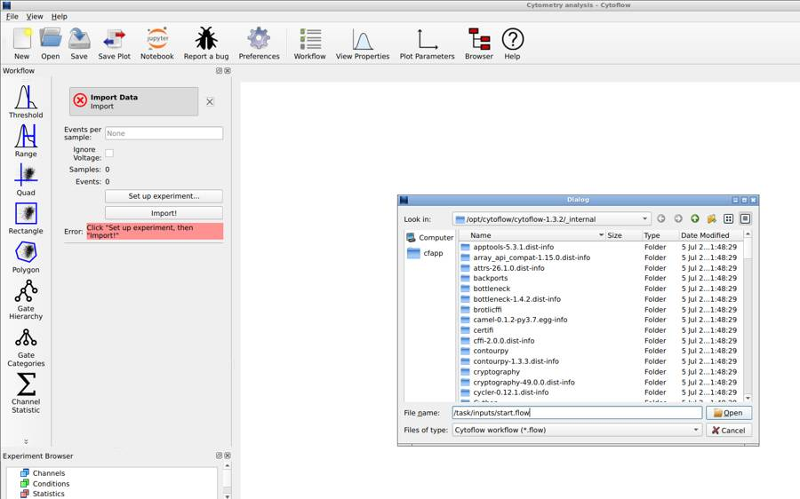
text(await tools.exec_command({cmd:"cu click 1314 745\ncu screenshot /tmp/load2.png","max_output_tokens":1000}));
image((await tools.view_image({path:"/tmp/load2.png"})).image_url);
Script completed Wall time 0.2 seconds Output:
{"chunk_id":"39de3a","wall_time_seconds":0.005996328,"exit_code":0,"original_token_count":4,"output":"/tmp/load2.png\n"}
text(await tools.exec_command({cmd:"cu click 750 447\nmkdir -p /task/outputs\ncu screenshot /tmp/import.png","max_output_tokens":1000}));
image((await tools.view_image({path:"/tmp/import.png"})).image_url);
text(await tools.clock__curr_time({}));
Script completed Wall time 0.2 seconds Output:
{"chunk_id":"ab5515","wall_time_seconds":0.006520458,"exit_code":0,"original_token_count":4,"output":"/tmp/import.png\n"}
{"current_time":"2026-11-06 00:33:28 UTC"}text(await tools.exec_command({cmd:"cu screenshot /tmp/loaded.png","max_output_tokens":1000}));
image((await tools.view_image({path:"/tmp/loaded.png"})).image_url);
Script completed Wall time 0.1 seconds Output:
{"chunk_id":"aa0034","wall_time_seconds":0.00000393,"exit_code":0,"original_token_count":4,"output":"/tmp/loaded.png\n"}
text(await tools.exec_command({cmd:"cu click 252 181\ncu click 22 30\ncu screenshot /tmp/menu.png","max_output_tokens":1000}));
image((await tools.view_image({path:"/tmp/menu.png"})).image_url);
Script completed Wall time 0.3 seconds Output:
{"chunk_id":"6bc65c","wall_time_seconds":0.110027998,"exit_code":0,"original_token_count":4,"output":"/tmp/menu.png\n"}
text(await tools.exec_command({cmd:"cu click 74 100\ncu screenshot /tmp/saveas.png","max_output_tokens":1000}));
image((await tools.view_image({path:"/tmp/saveas.png"})).image_url);
Script completed Wall time 0.2 seconds Output:
{"chunk_id":"907c5b","wall_time_seconds":0.014261948,"exit_code":0,"original_token_count":4,"output":"/tmp/saveas.png\n"}
text(await tools.exec_command({cmd:"cu click 1005 744\ncu paste '/task/outputs/workflow.flow'\ncu click 1309 746\ncu screenshot /tmp/saved.png","max_output_tokens":1000}));
image((await tools.view_image({path:"/tmp/saved.png"})).image_url);
Script completed Wall time 1.6 seconds Output:
{"chunk_id":"1f1e5d","wall_time_seconds":1.446477578,"exit_code":0,"original_token_count":4,"output":"/tmp/saved.png\n"}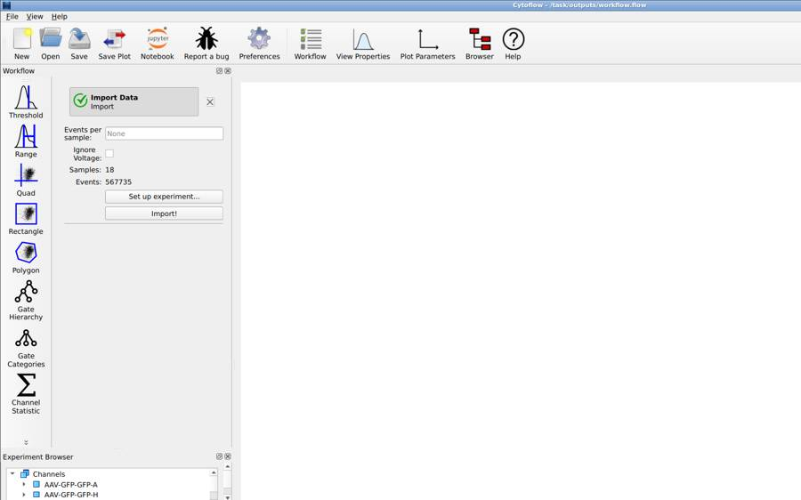
text(await tools.exec_command({cmd:"cu click 47 454\ncu screenshot /tmp/polygon.png","max_output_tokens":1000}));
image((await tools.view_image({path:"/tmp/polygon.png"})).image_url);
Script completed Wall time 0.2 seconds Output:
{"chunk_id":"06d803","wall_time_seconds":0.007202809,"exit_code":0,"original_token_count":5,"output":"/tmp/polygon.png\n"}
text(await tools.exec_command({cmd:"cu screenshot /tmp/poly2.png","max_output_tokens":1000}));
image((await tools.view_image({path:"/tmp/poly2.png"})).image_url);
Script completed Wall time 0.1 seconds Output:
{"chunk_id":"8b4e74","wall_time_seconds":0.00000343,"exit_code":0,"original_token_count":4,"output":"/tmp/poly2.png\n"}
text(await tools.exec_command({cmd:"cu click 265 322\ncu type 'cells'\ncu click 359 354\ncu screenshot /tmp/channels.png","max_output_tokens":1000}));
image((await tools.view_image({path:"/tmp/channels.png"})).image_url);
Script completed Wall time 0.4 seconds Output:
{"chunk_id":"abc6cd","wall_time_seconds":0.242923323,"exit_code":0,"original_token_count":5,"output":"/tmp/channels.png\n"}
text(await tools.exec_command({cmd:"cu click 226 425\ncu click 359 385\ncu screenshot /tmp/ychannel.png","max_output_tokens":1000}));
image((await tools.view_image({path:"/tmp/ychannel.png"})).image_url);
Script completed Wall time 0.3 seconds Output:
{"chunk_id":"7a3c2f","wall_time_seconds":0.11199174,"exit_code":0,"original_token_count":5,"output":"/tmp/ychannel.png\n"}
text(await tools.exec_command({cmd:"cu click 222 600\ncu click 652 67\ncu screenshot /tmp/scatter.png","max_output_tokens":1000}));
image((await tools.view_image({path:"/tmp/scatter.png"})).image_url);
Script completed Wall time 0.3 seconds Output:
{"chunk_id":"733f04","wall_time_seconds":0.11232224,"exit_code":0,"original_token_count":5,"output":"/tmp/scatter.png\n"}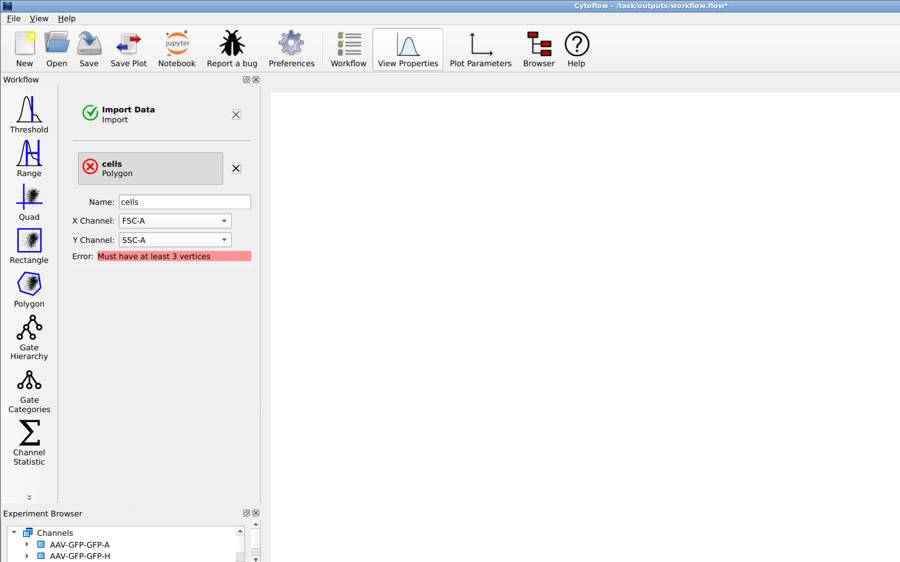
text(await tools.exec_command({cmd:"cu screenshot /tmp/scatter2.png","max_output_tokens":1000}));
image((await tools.view_image({path:"/tmp/scatter2.png"})).image_url);
Script completed Wall time 0.1 seconds Output:
{"chunk_id":"a7f632","wall_time_seconds":0.0000036,"exit_code":0,"original_token_count":5,"output":"/tmp/scatter2.png\n"}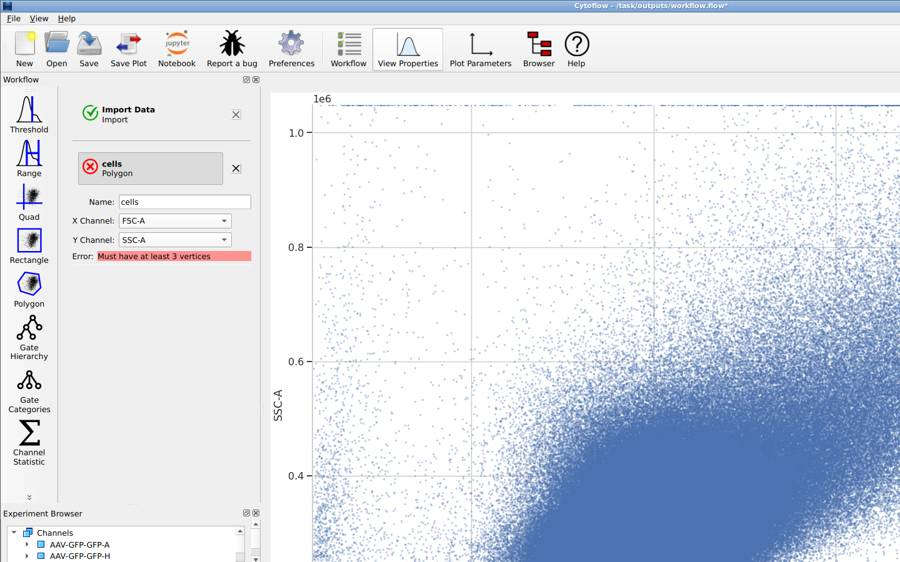
text(await tools.exec_command({cmd:"cu key alt+F10\ncu screenshot /tmp/max.png","max_output_tokens":1000}));
image((await tools.view_image({path:"/tmp/max.png"})).image_url);
Script completed Wall time 0.2 seconds Output:
{"chunk_id":"b861ee","wall_time_seconds":0.00000374,"exit_code":0,"original_token_count":4,"output":"/tmp/max.png\n"}text(await tools.exec_command({cmd:"cu key alt+space\ncu screenshot /tmp/windowmenu.png","max_output_tokens":1000}));
image((await tools.view_image({path:"/tmp/windowmenu.png"})).image_url);
Script completed Wall time 0.2 seconds Output:
{"chunk_id":"bffeef","wall_time_seconds":0.00000406,"exit_code":0,"original_token_count":5,"output":"/tmp/windowmenu.png\n"}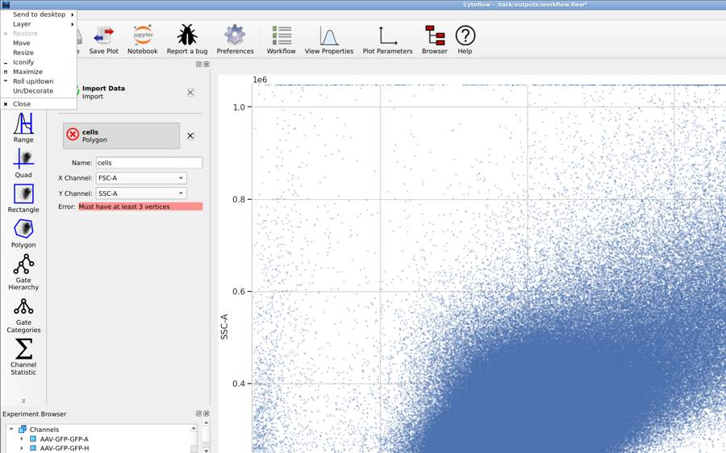
text(await tools.exec_command({cmd:"cu click 69 142\ncu screenshot /tmp/max2.png","max_output_tokens":1000}));
image((await tools.view_image({path:"/tmp/max2.png"})).image_url);
Script completed Wall time 0.2 seconds Output:
{"chunk_id":"67a839","wall_time_seconds":0.050449113,"exit_code":0,"original_token_count":4,"output":"/tmp/max2.png\n"}
text(await tools.exec_command({cmd:"cu click 770 69\ncu click 650 68\ncu screenshot /tmp/viewprops.png","max_output_tokens":1000}));
image((await tools.view_image({path:"/tmp/viewprops.png"})).image_url);
Script completed Wall time 0.3 seconds Output:
{"chunk_id":"c85ee7","wall_time_seconds":0.14334968,"exit_code":0,"original_token_count":5,"output":"/tmp/viewprops.png\n"}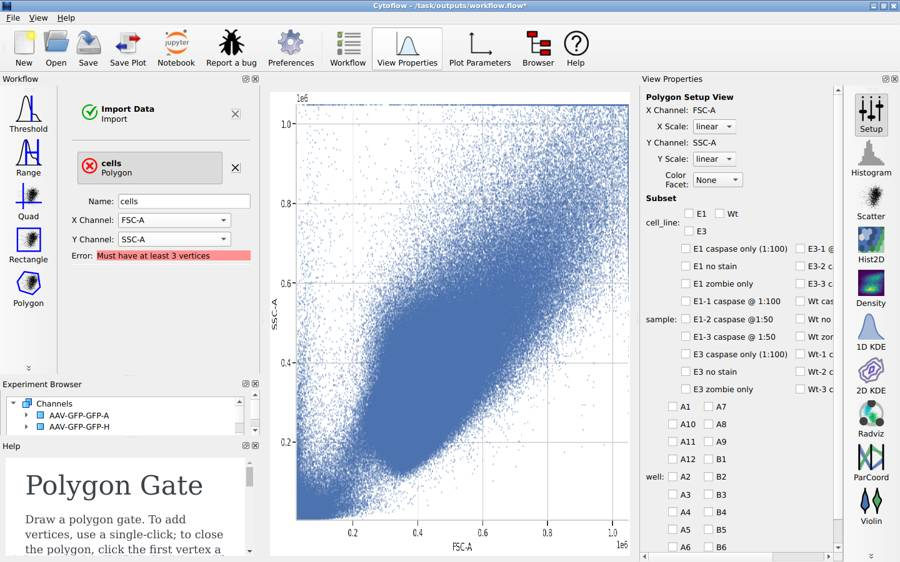
text(await tools.exec_command({cmd:"cu click 1075 820\ncu screenshot /tmp/a4scatter.png","max_output_tokens":1000}));
image((await tools.view_image({path:"/tmp/a4scatter.png"})).image_url);
Script completed Wall time 0.2 seconds Output:
{"chunk_id":"c0e95a","wall_time_seconds":0.036853356,"exit_code":0,"original_token_count":5,"output":"/tmp/a4scatter.png\n"}text(await tools.exec_command({cmd:"cu screenshot /tmp/a4scatter2.png","max_output_tokens":1000}));
image((await tools.view_image({path:"/tmp/a4scatter2.png"})).image_url);
Script completed Wall time 0.1 seconds Output:
{"chunk_id":"b971de","wall_time_seconds":0.00000389,"exit_code":0,"original_token_count":5,"output":"/tmp/a4scatter2.png\n"}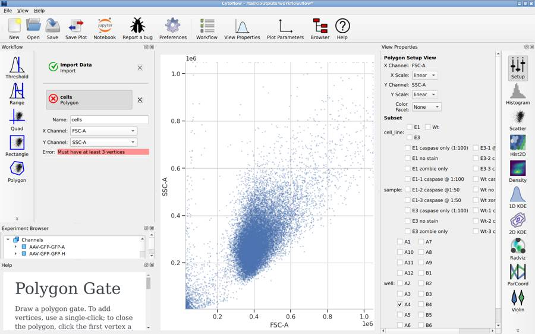
text(await tools.exec_command({cmd:"cu click 1075 820\ncu screenshot /tmp/cellsall.png","max_output_tokens":1000}));
image((await tools.view_image({path:"/tmp/cellsall.png"})).image_url);
Script completed Wall time 0.2 seconds Output:
{"chunk_id":"a272b9","wall_time_seconds":0.025717572,"exit_code":0,"original_token_count":5,"output":"/tmp/cellsall.png\n"}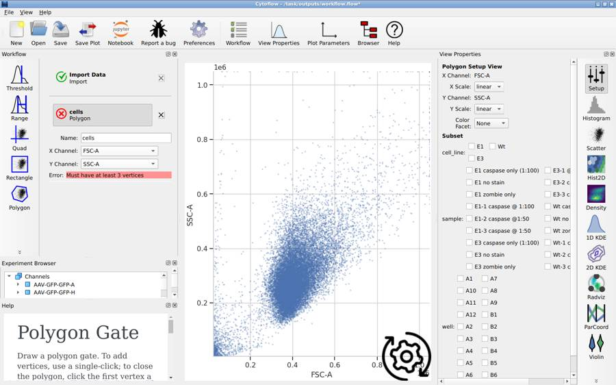
text(await tools.exec_command({cmd:"cu screenshot /tmp/cellsdraw.png","max_output_tokens":1000}));
image((await tools.view_image({path:"/tmp/cellsdraw.png"})).image_url);
Script completed Wall time 0.1 seconds Output:
{"chunk_id":"1a39f4","wall_time_seconds":0.00000463,"exit_code":0,"original_token_count":5,"output":"/tmp/cellsdraw.png\n"}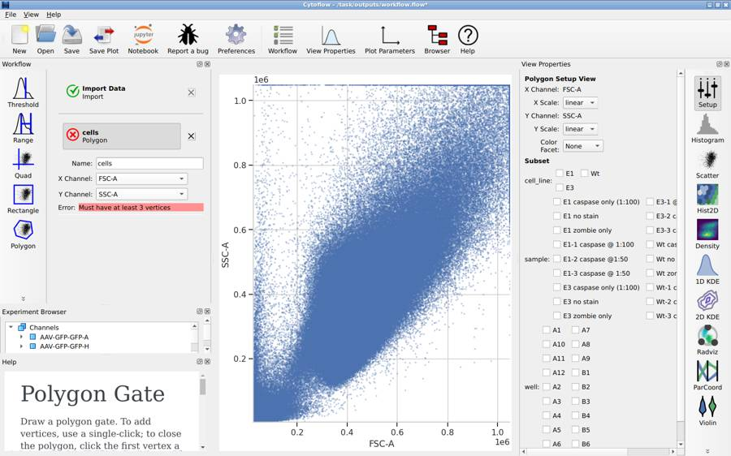
text(await tools.exec_command({cmd:"cu click 580 776\ncu click 675 782\ncu click 994 643\ncu click 994 181\ncu click 733 181\ncu click 590 485\ncu click 567 693\ncu click 580 776 double\ncu key ctrl+s\ncu screenshot /tmp/cellsgated.png","max_output_tokens":1000}));
image((await tools.view_image({path:"/tmp/cellsgated.png"})).image_url);
Script completed Wall time 1.1 seconds Output:
{"chunk_id":"9bab85","wall_time_seconds":0.90435352,"exit_code":0,"original_token_count":5,"output":"/tmp/cellsgated.png\n"}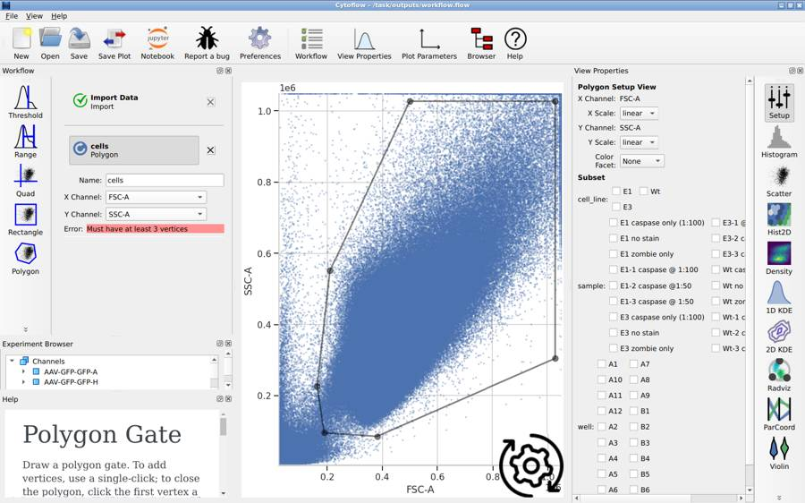
text(await tools.exec_command({cmd:"cu click 47 453\ncu screenshot /tmp/singletgate.png","max_output_tokens":1000}));
image((await tools.view_image({path:"/tmp/singletgate.png"})).image_url);
Script completed Wall time 0.2 seconds Output:
{"chunk_id":"69149e","wall_time_seconds":0.035884705,"exit_code":0,"original_token_count":6,"output":"/tmp/singletgate.png\n"}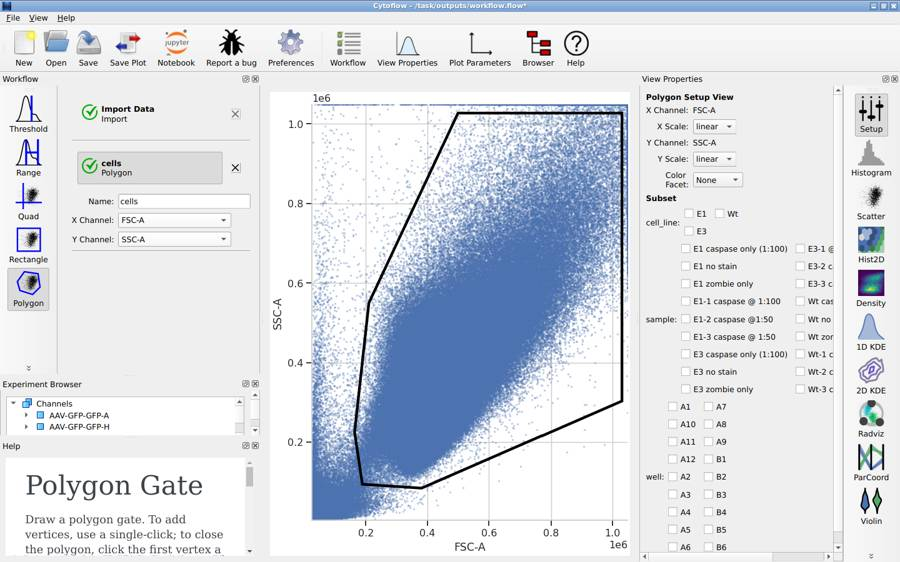
text(await tools.exec_command({cmd:"cu screenshot /tmp/polynew.png","max_output_tokens":1000}));
image((await tools.view_image({path:"/tmp/polynew.png"})).image_url);
Script completed Wall time 0.1 seconds Output:
{"chunk_id":"31471f","wall_time_seconds":0.00000355,"exit_code":0,"original_token_count":5,"output":"/tmp/polynew.png\n"}
text(await tools.exec_command({cmd:"cu click 259 409\ncu type 'singlet_shape'\ncu click 356 439\ncu screenshot /tmp/singletx.png","max_output_tokens":1000}));
image((await tools.view_image({path:"/tmp/singletx.png"})).image_url);
Script completed Wall time 0.6 seconds Output:
{"chunk_id":"94e769","wall_time_seconds":0.456804071,"exit_code":0,"original_token_count":5,"output":"/tmp/singletx.png\n"}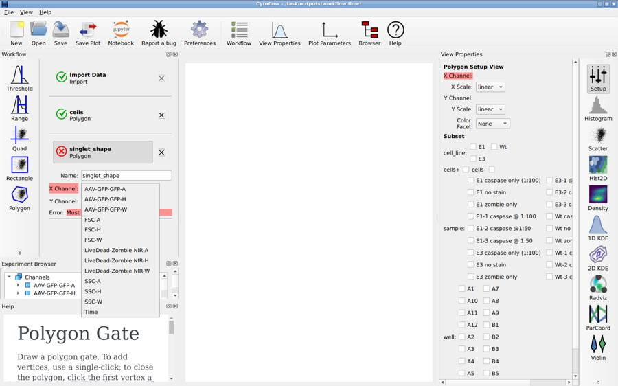
text(await tools.exec_command({cmd:"cu click 217 512\ncu click 356 468\ncu screenshot /tmp/singlety.png","max_output_tokens":1000}));
image((await tools.view_image({path:"/tmp/singlety.png"})).image_url);
Script completed Wall time 0.3 seconds Output:
{"chunk_id":"d778ec","wall_time_seconds":0.122273833,"exit_code":0,"original_token_count":5,"output":"/tmp/singlety.png\n"}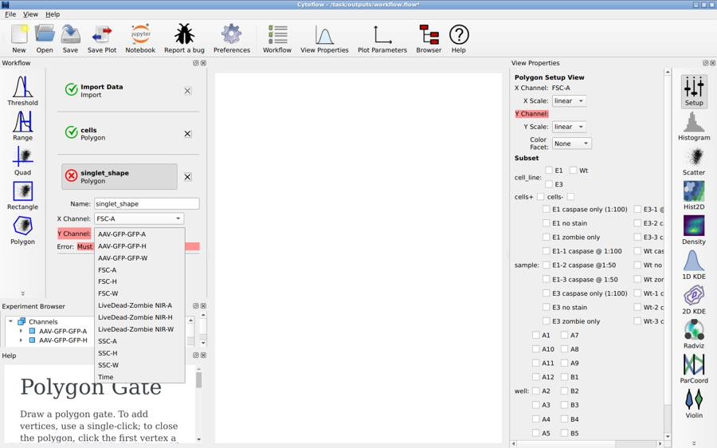
text(await tools.exec_command({cmd:"cu click 218 564\ncu click 1085 395\ncu screenshot /tmp/singletview.png","max_output_tokens":1000}));
image((await tools.view_image({path:"/tmp/singletview.png"})).image_url);
Script completed Wall time 0.3 seconds Output:
{"chunk_id":"1ef091","wall_time_seconds":0.125314347,"exit_code":0,"original_token_count":6,"output":"/tmp/singletview.png\n"}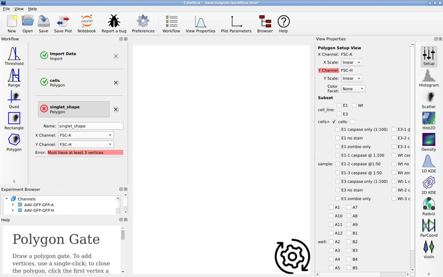
text(await tools.exec_command({cmd:"cu click 408 714\ncu click 408 615\ncu screenshot /tmp/singletready.png","max_output_tokens":1000}));
image((await tools.view_image({path:"/tmp/singletready.png"})).image_url);
Script completed Wall time 0.3 seconds Output:
{"chunk_id":"5f8cc3","wall_time_seconds":0.129040282,"exit_code":0,"original_token_count":6,"output":"/tmp/singletready.png\n"}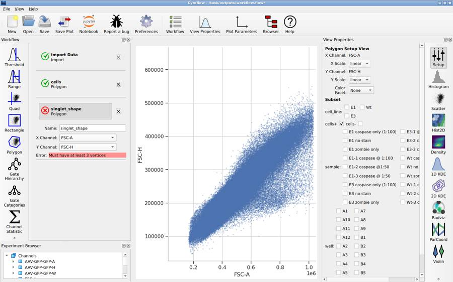
text(await tools.exec_command({cmd:"cu click 593 797\ncu click 684 734\ncu click 844 573\ncu click 996 467\ncu click 996 286\ncu click 844 446\ncu click 684 616\ncu click 593 723\ncu click 593 797 double\ncu key ctrl+s\ncu click 47 526\ncu screenshot /tmp/hierarchy.png","max_output_tokens":1000}));
image((await tools.view_image({path:"/tmp/hierarchy.png"})).image_url);
Script completed Wall time 1.3 seconds Output:
{"chunk_id":"ca01ed","wall_time_seconds":1.09606748,"exit_code":0,"original_token_count":5,"output":"/tmp/hierarchy.png\n"}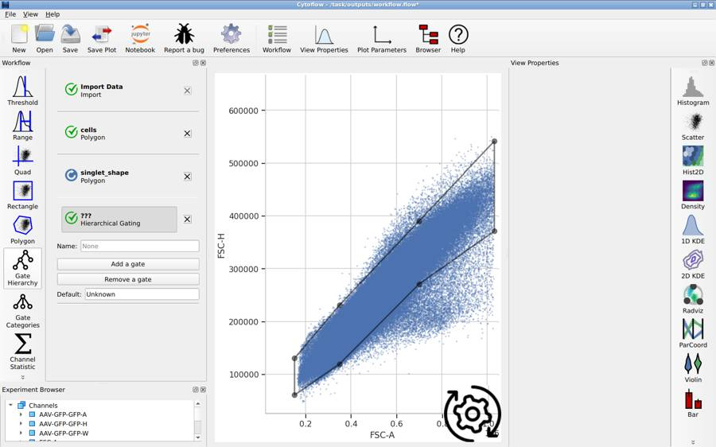
text(await tools.exec_command({cmd:"cu click 246 493\ncu type 'singlets'\ncu click 266 532\ncu click 922 70\ncu screenshot /tmp/hieradd.png","max_output_tokens":1000}));
image((await tools.view_image({path:"/tmp/hieradd.png"})).image_url);
Script completed Wall time 0.6 seconds Output:
{"chunk_id":"5c1631","wall_time_seconds":0.434691224,"exit_code":0,"original_token_count":5,"output":"/tmp/hieradd.png\n"}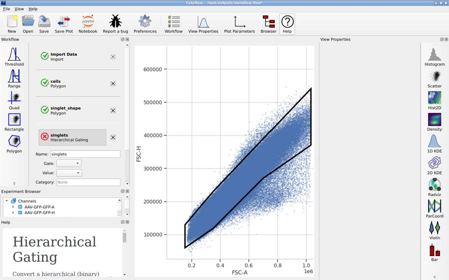
text(await tools.exec_command({cmd:"cu scroll 272 828 down 4\ncu screenshot /tmp/hierhelp.png","max_output_tokens":1000}));
image((await tools.view_image({path:"/tmp/hierhelp.png"})).image_url);
Script completed Wall time 0.5 seconds Output:
{"chunk_id":"0cd86b","wall_time_seconds":0.322541193,"exit_code":0,"original_token_count":5,"output":"/tmp/hierhelp.png\n"}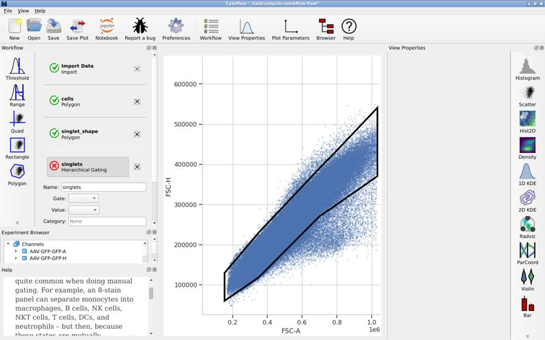
text(await tools.exec_command({cmd:"cu drag 216 704 216 370\ncu scroll 275 810 up 12\ncu screenshot /tmp/hierhelp2.png","max_output_tokens":1000}));
image((await tools.view_image({path:"/tmp/hierhelp2.png"})).image_url);
Script completed Wall time 1.3 seconds Output:
{"chunk_id":"409be8","wall_time_seconds":1.15992134,"exit_code":0,"original_token_count":5,"output":"/tmp/hierhelp2.png\n"}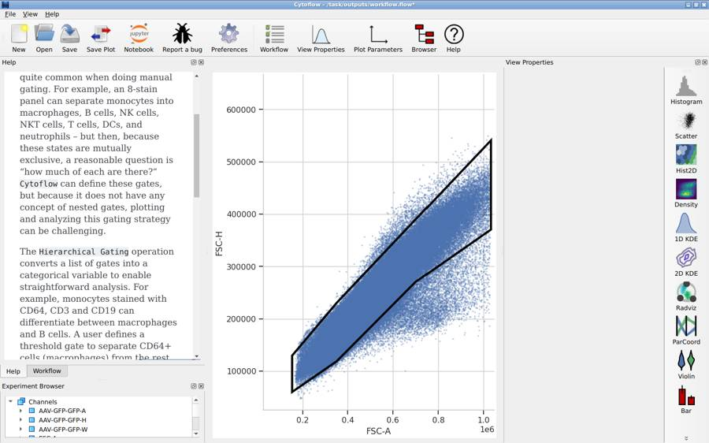
text(await tools.exec_command({cmd:"cu scroll 275 634 down 6\ncu screenshot /tmp/hierhelp3.png","max_output_tokens":1000}));
image((await tools.view_image({path:"/tmp/hierhelp3.png"})).image_url);
Script completed Wall time 0.7 seconds Output:
{"chunk_id":"b018ed","wall_time_seconds":0.524555866,"exit_code":0,"original_token_count":5,"output":"/tmp/hierhelp3.png\n"}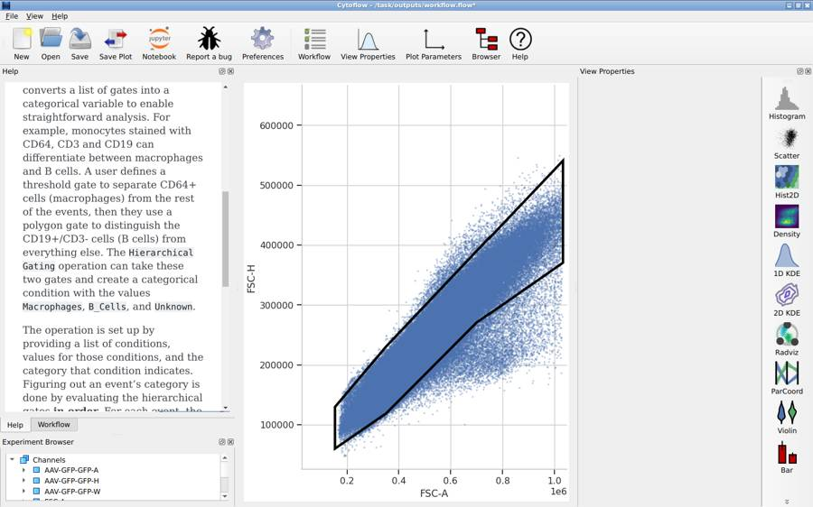
text(await tools.exec_command({cmd:"cu scroll 271 635 down 6\ncu screenshot /tmp/hierhelp4.png","max_output_tokens":1000}));
image((await tools.view_image({path:"/tmp/hierhelp4.png"})).image_url);
Script completed Wall time 0.7 seconds Output:
{"chunk_id":"90e69c","wall_time_seconds":0.523481514,"exit_code":0,"original_token_count":5,"output":"/tmp/hierhelp4.png\n"}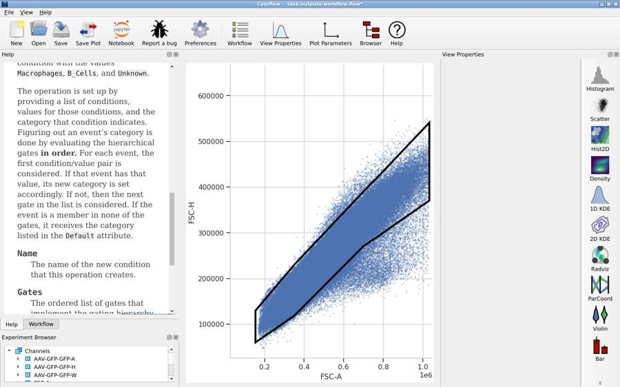
text(await tools.exec_command({cmd:"cu click 94 752\ncu click 408 127\ncu screenshot /tmp/workflowback.png","max_output_tokens":1000}));
image((await tools.view_image({path:"/tmp/workflowback.png"})).image_url);
Script completed Wall time 0.3 seconds Output:
{"chunk_id":"4f632e","wall_time_seconds":0.129804163,"exit_code":0,"original_token_count":6,"output":"/tmp/workflowback.png\n"}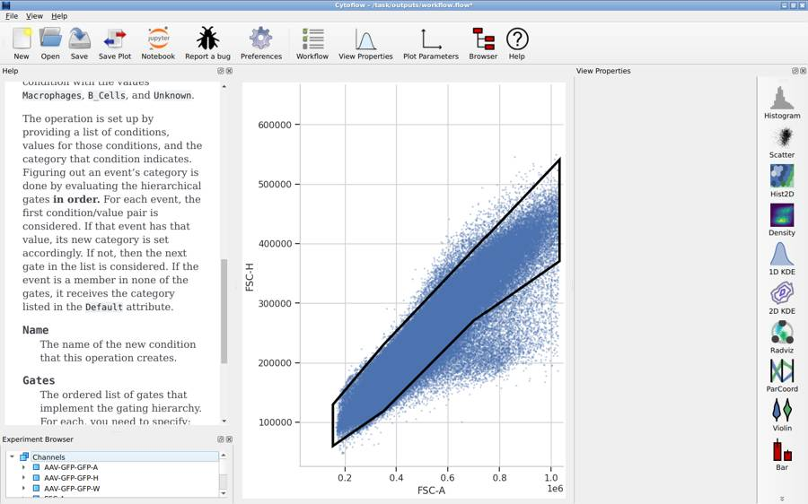
text(await tools.exec_command({cmd:"cu click 920 70\ncu click 554 69\ncu screenshot /tmp/wfback2.png","max_output_tokens":1000}));
image((await tools.view_image({path:"/tmp/wfback2.png"})).image_url);
Script completed Wall time 0.3 seconds Output:
{"chunk_id":"77ed45","wall_time_seconds":0.126337048,"exit_code":0,"original_token_count":5,"output":"/tmp/wfback2.png\n"}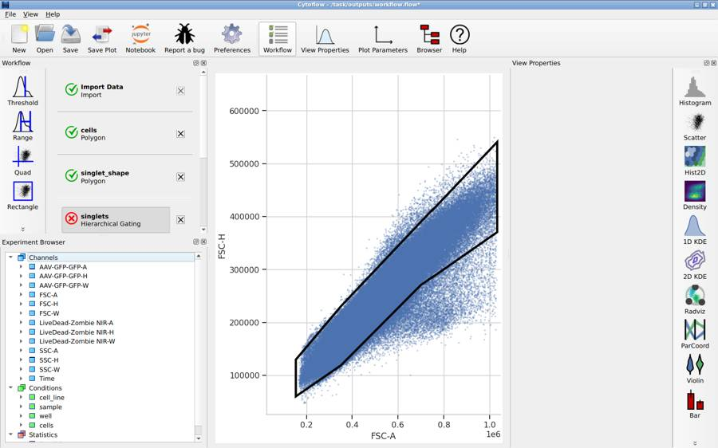
text(await tools.exec_command({cmd:"cu click 362 442\ncu screenshot /tmp/del.png","max_output_tokens":1000}));
image((await tools.view_image({path:"/tmp/del.png"})).image_url);
Script completed Wall time 0.2 seconds Output:
{"chunk_id":"c2c7f2","wall_time_seconds":0.009866412,"exit_code":0,"original_token_count":4,"output":"/tmp/del.png\n"}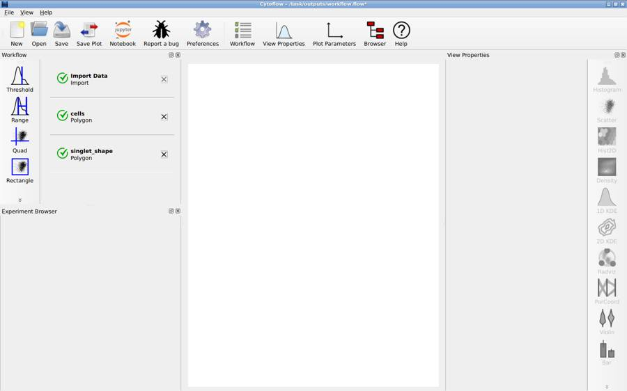
text(await tools.exec_command({cmd:"cu click 408 486\ncu click 241 352\ncu screenshot /tmp/renamesinglet.png","max_output_tokens":1000}));
image((await tools.view_image({path:"/tmp/renamesinglet.png"})).image_url);
Script completed Wall time 0.3 seconds Output:
{"chunk_id":"858551","wall_time_seconds":0.114466693,"exit_code":0,"original_token_count":6,"output":"/tmp/renamesinglet.png\n"}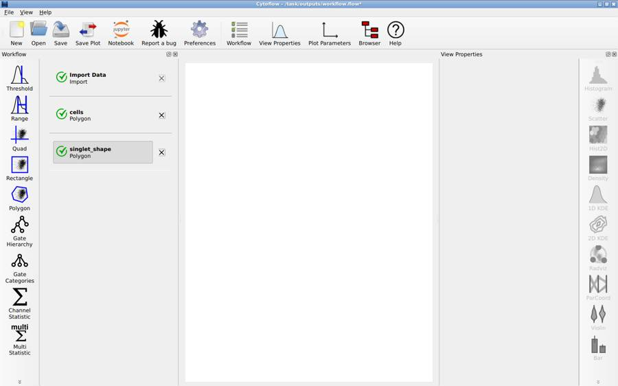
text(await tools.exec_command({cmd:"cu click 238 353\ncu screenshot /tmp/rename2.png","max_output_tokens":1000}));
image((await tools.view_image({path:"/tmp/rename2.png"})).image_url);
Script completed Wall time 0.2 seconds Output:
{"chunk_id":"3a7f2a","wall_time_seconds":0.009992732,"exit_code":0,"original_token_count":5,"output":"/tmp/rename2.png\n"}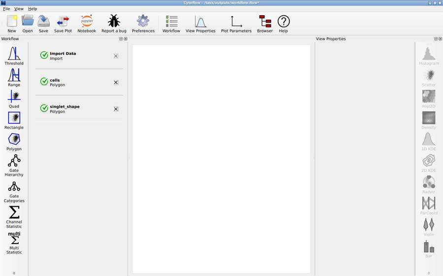
text(await tools.exec_command({cmd:"cu click 190 346 double\ncu screenshot /tmp/rename3.png","max_output_tokens":1000}));
image((await tools.view_image({path:"/tmp/rename3.png"})).image_url);
Script completed Wall time 0.3 seconds Output:
{"chunk_id":"386ffc","wall_time_seconds":0.11182788,"exit_code":0,"original_token_count":5,"output":"/tmp/rename3.png\n"}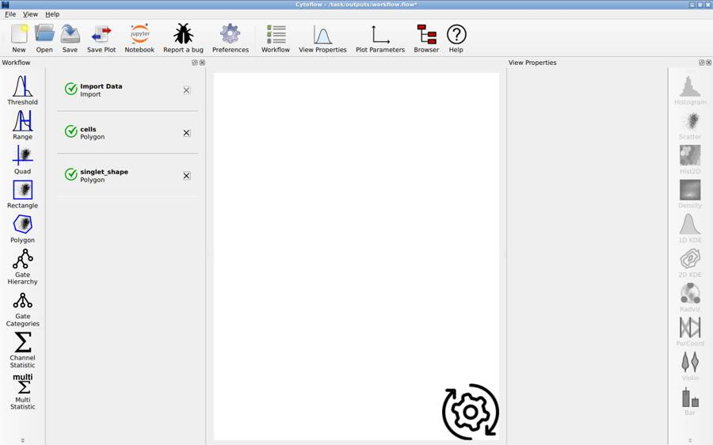
text(await tools.exec_command({cmd:"cu screenshot /tmp/rename4.png","max_output_tokens":1000}));
image((await tools.view_image({path:"/tmp/rename4.png"})).image_url);
Script completed Wall time 0.1 seconds Output:
{"chunk_id":"68362e","wall_time_seconds":0.00000437,"exit_code":0,"original_token_count":5,"output":"/tmp/rename4.png\n"}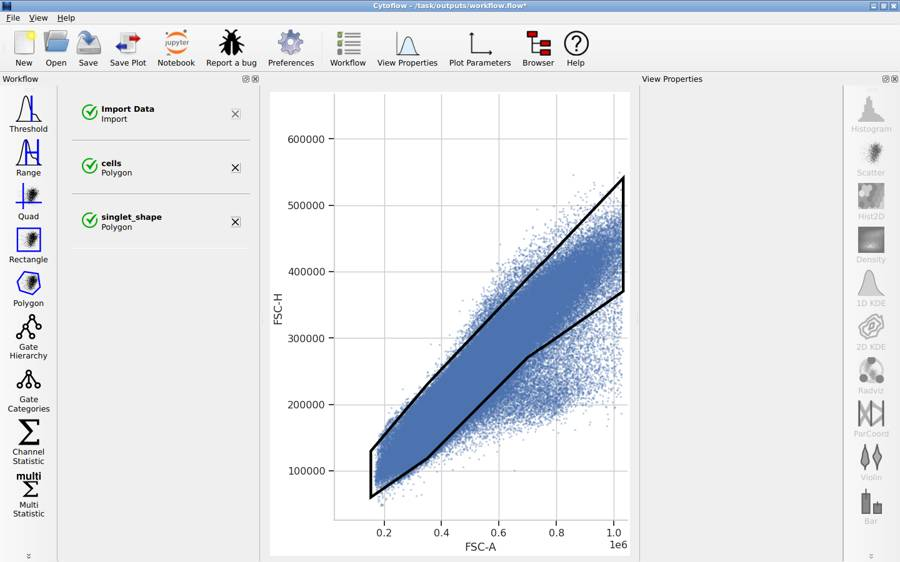
text(await tools.exec_command({cmd:"cu click 261 366\ncu screenshot /tmp/rename5.png","max_output_tokens":1000}));
image((await tools.view_image({path:"/tmp/rename5.png"})).image_url);
Script completed Wall time 0.2 seconds Output:
{"chunk_id":"257f9c","wall_time_seconds":0.018605753,"exit_code":0,"original_token_count":5,"output":"/tmp/rename5.png\n"}text(await tools.exec_command({cmd:"cu screenshot /tmp/rename6.png","max_output_tokens":1000}));
image((await tools.view_image({path:"/tmp/rename6.png"})).image_url);
Script completed Wall time 0.1 seconds Output:
{"chunk_id":"3bac59","wall_time_seconds":0.00000366,"exit_code":0,"original_token_count":5,"output":"/tmp/rename6.png\n"}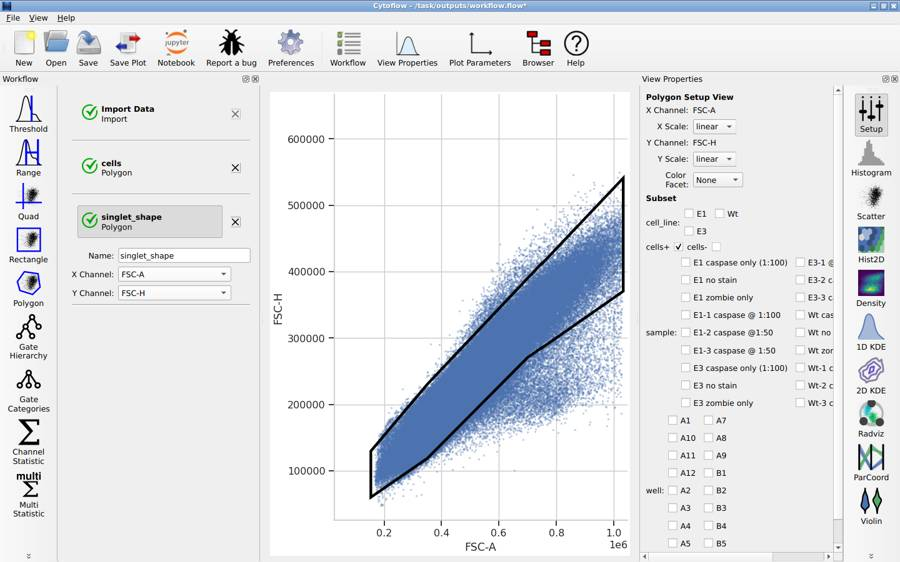
text(await tools.exec_command({cmd:"cu click 258 409\ncu key ctrl+a\ncu type 'singlets'\ncu key tab\ncu click 46 249\nsleep 2\ncu screenshot /tmp/livegate.png","max_output_tokens":1000}));
image((await tools.view_image({path:"/tmp/livegate.png"})).image_url);
Script completed Wall time 2.5 seconds Output:
{"chunk_id":"98a56c","wall_time_seconds":2.364471205,"exit_code":0,"original_token_count":28,"output":"(symbol) No such key name 'tab'. Ignoring it.\n(symbol) No such key name 'tab'. Ignoring it.\n/tmp/livegate.png\n"}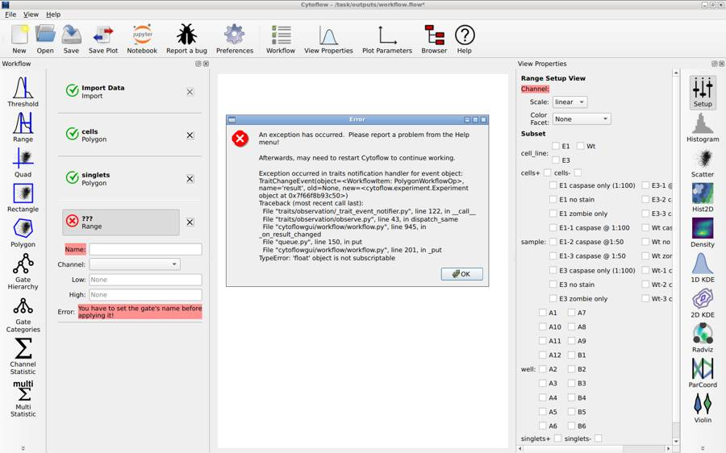
text(await tools.exec_command({cmd:"cu click 920 545\ncu click 258 494\ncu type 'live'\ncu click 346 523\nsleep 1\ncu screenshot /tmp/livechannels.png","max_output_tokens":1000}));
image((await tools.view_image({path:"/tmp/livechannels.png"})).image_url);
Script completed Wall time 1.5 seconds Output:
{"chunk_id":"c95055","wall_time_seconds":1.334585538,"exit_code":0,"original_token_count":6,"output":"/tmp/livechannels.png\n"}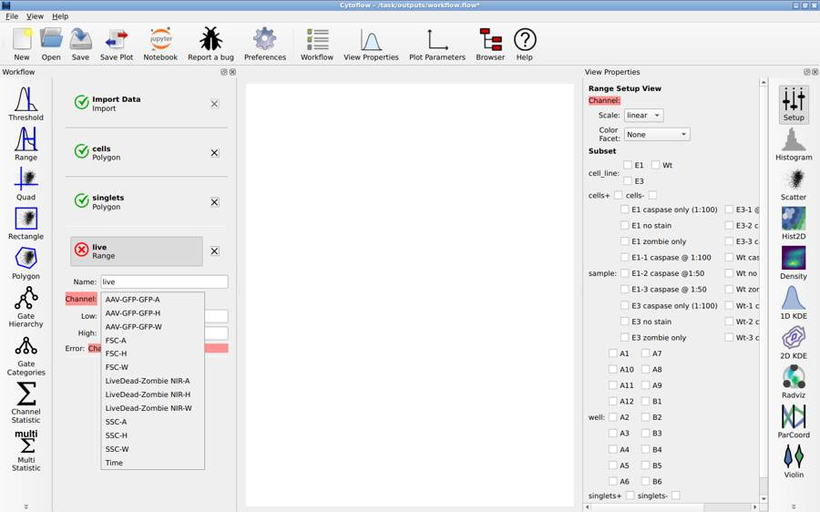
text(await tools.exec_command({cmd:"cu click 269 670\ncu click 1153 203\nsleep 1\ncu screenshot /tmp/scales.png","max_output_tokens":1000}));
image((await tools.view_image({path:"/tmp/scales.png"})).image_url);
Script completed Wall time 1.3 seconds Output:
{"chunk_id":"e060d4","wall_time_seconds":1.123519384,"exit_code":0,"original_token_count":4,"output":"/tmp/scales.png\n"}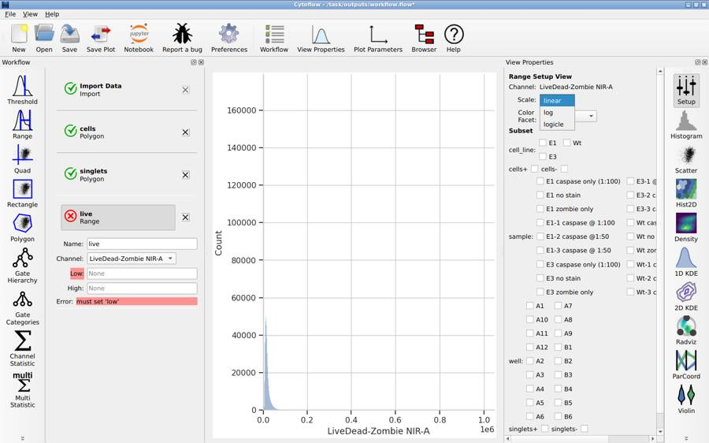
text(await tools.exec_command({cmd:"cu click 1127 253\ncu click 1086 343\ncu click 1105 870\ncu click 1175 236\nsleep 1\ncu screenshot /tmp/hue.png","max_output_tokens":1000}));
image((await tools.view_image({path:"/tmp/hue.png"})).image_url);
Script completed Wall time 1.5 seconds Output:
{"chunk_id":"02539d","wall_time_seconds":1.335369129,"exit_code":0,"original_token_count":4,"output":"/tmp/hue.png\n"}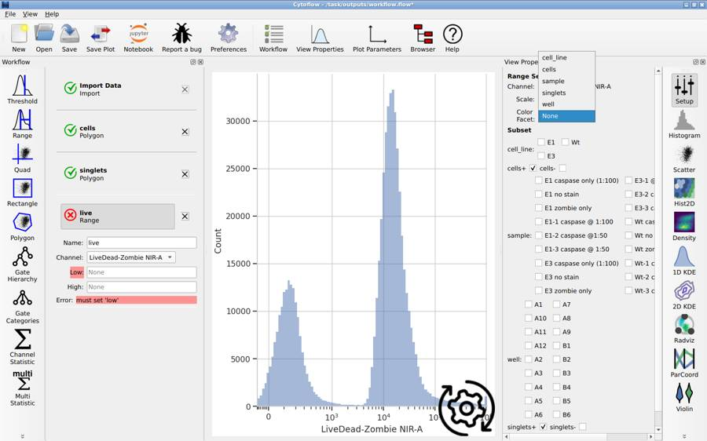
text(await tools.exec_command({cmd:"cu click 1126 210\ncu click 1075 620\ncu click 1075 732\ncu click 1075 761\ncu click 1075 790\nsleep 2\ncu screenshot /tmp/livecontrols.png","max_output_tokens":1000}));
image((await tools.view_image({path:"/tmp/livecontrols.png"})).image_url);
Script completed Wall time 2.6 seconds Output:
{"chunk_id":"136df8","wall_time_seconds":2.437788467,"exit_code":0,"original_token_count":6,"output":"/tmp/livecontrols.png\n"}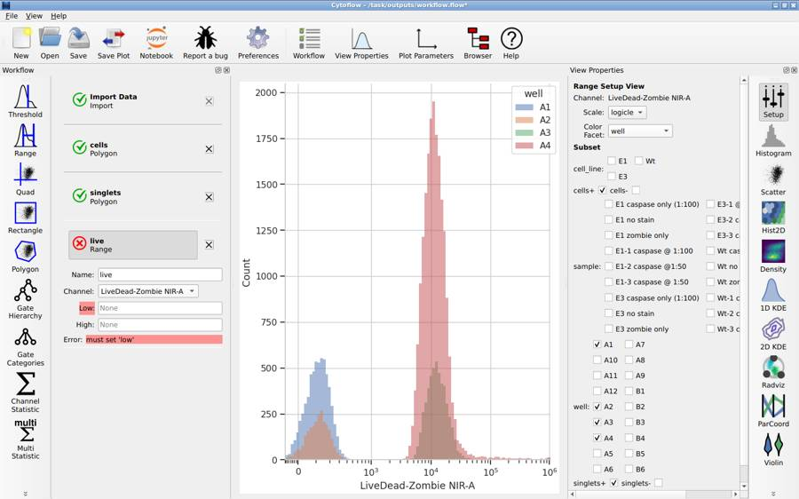
text(await tools.exec_command({cmd:"cu click 264 556\ncu type '-100000'\ncu click 270 584\ncu type '40000'\ncu click 166 581\nsleep 2\ncu key ctrl+s\ncu click 47 179\nsleep 2\ncu screenshot /tmp/caspasegate.png","max_output_tokens":1000}));
image((await tools.view_image({path:"/tmp/caspasegate.png"})).image_url);
Script completed Wall time 4.8 seconds Output:
{"chunk_id":"e8e3c9","wall_time_seconds":4.674943213,"exit_code":0,"original_token_count":6,"output":"/tmp/caspasegate.png\n"}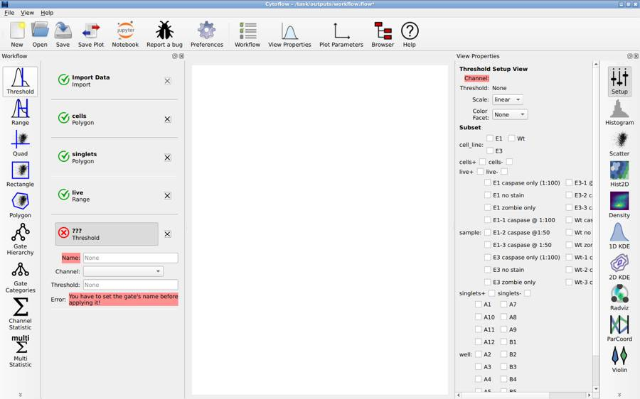
text(await tools.exec_command({cmd:"cu click 273 580\ncu type 'caspase_positive'\ncu click 355 612\nsleep 1\ncu screenshot /tmp/markerchannel.png","max_output_tokens":1000}));
image((await tools.view_image({path:"/tmp/markerchannel.png"})).image_url);
Script completed Wall time 1.7 seconds Output:
{"chunk_id":"a4a97e","wall_time_seconds":1.534346708,"exit_code":0,"original_token_count":6,"output":"/tmp/markerchannel.png\n"}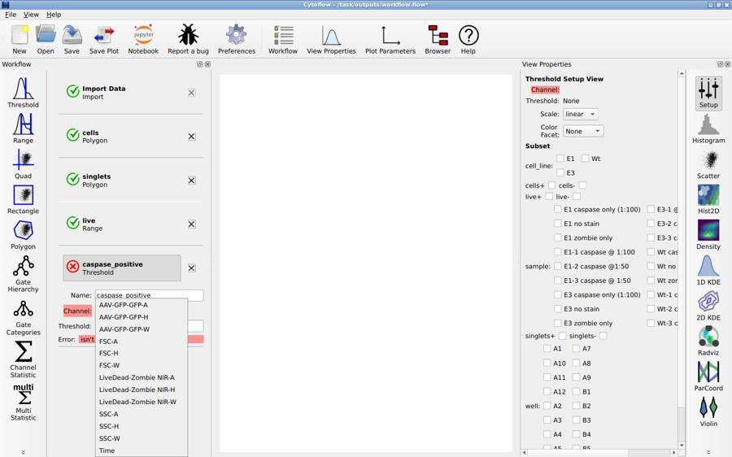
text(await tools.exec_command({cmd:"cu click 260 601\ncu click 1167 225\nsleep 0.5\ncu screenshot /tmp/markerscale.png","max_output_tokens":1000}));
image((await tools.view_image({path:"/tmp/markerscale.png"})).image_url);
Script completed Wall time 0.8 seconds Output:
{"chunk_id":"54a18f","wall_time_seconds":0.623182729,"exit_code":0,"original_token_count":6,"output":"/tmp/markerscale.png\n"}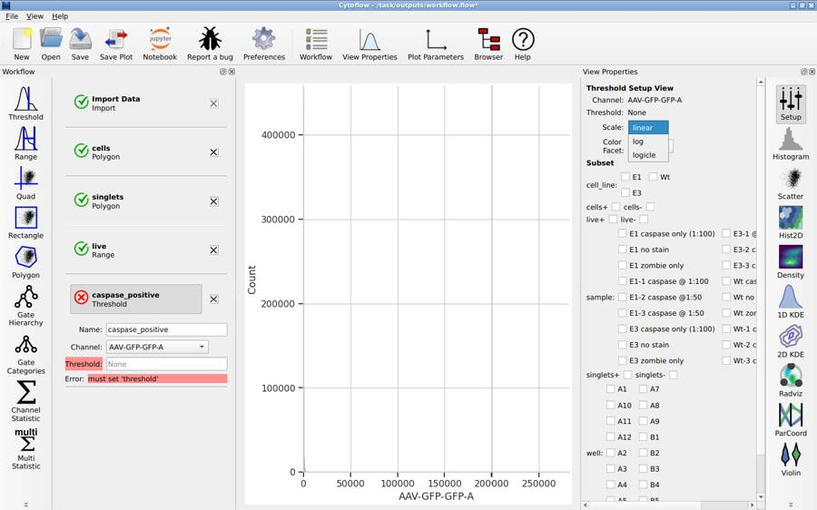
text(await tools.exec_command({cmd:"cu click 1138 272\ncu click 1085 364\ncu click 1080 388\ncu click 1105 661\ncu click 1176 256\nsleep 0.5\ncu screenshot /tmp/markerhue.png","max_output_tokens":1000}));
image((await tools.view_image({path:"/tmp/markerhue.png"})).image_url);
Script completed Wall time 1.1 seconds Output:
{"chunk_id":"eb3df8","wall_time_seconds":0.942683748,"exit_code":0,"original_token_count":5,"output":"/tmp/markerhue.png\n"}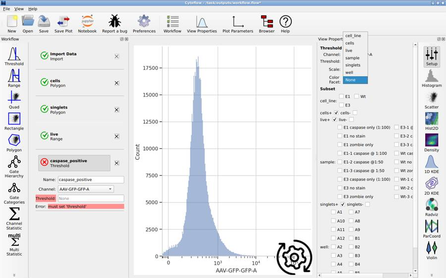
text(await tools.exec_command({cmd:"cu click 1133 233\ncu click 1076 686\ncu click 1076 798\ncu click 1076 826\ncu click 1076 854\nsleep 2\ncu screenshot /tmp/caspasecontrols.png","max_output_tokens":1000}));
image((await tools.view_image({path:"/tmp/caspasecontrols.png"})).image_url);
Script completed Wall time 2.6 seconds Output:
{"chunk_id":"88e8d6","wall_time_seconds":2.439777109,"exit_code":0,"original_token_count":7,"output":"/tmp/caspasecontrols.png\n"}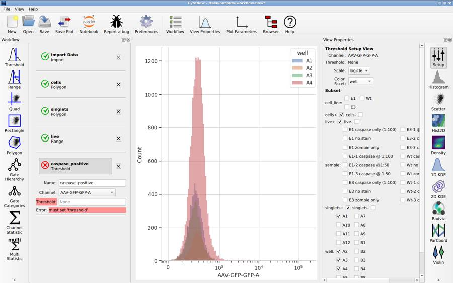
text(await tools.exec_command({cmd:"cu click 1075 799\ncu click 1075 854\ncu click 1133 685\ncu click 1133 742\ncu click 1133 770\ncu click 1133 827\ncu click 768 70\nsleep 2\ncu screenshot /tmp/controlneg.png","max_output_tokens":1000}));
image((await tools.view_image({path:"/tmp/controlneg.png"})).image_url);
Script completed Wall time 2.8 seconds Output:
{"chunk_id":"585a5c","wall_time_seconds":2.655364919,"exit_code":0,"original_token_count":5,"output":"/tmp/controlneg.png\n"}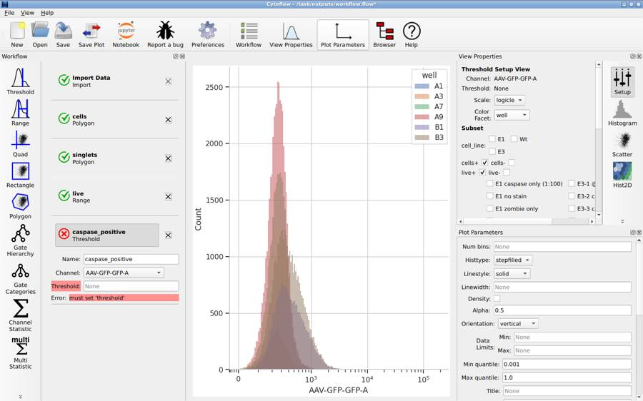
text(await tools.exec_command({cmd:"cu click 1112 670\ncu click 1181 583\nsleep 0.5\ncu screenshot /tmp/histtype.png","max_output_tokens":1000}));
image((await tools.view_image({path:"/tmp/histtype.png"})).image_url);
Script completed Wall time 0.8 seconds Output:
{"chunk_id":"1683ae","wall_time_seconds":0.621620267,"exit_code":0,"original_token_count":5,"output":"/tmp/histtype.png\n"}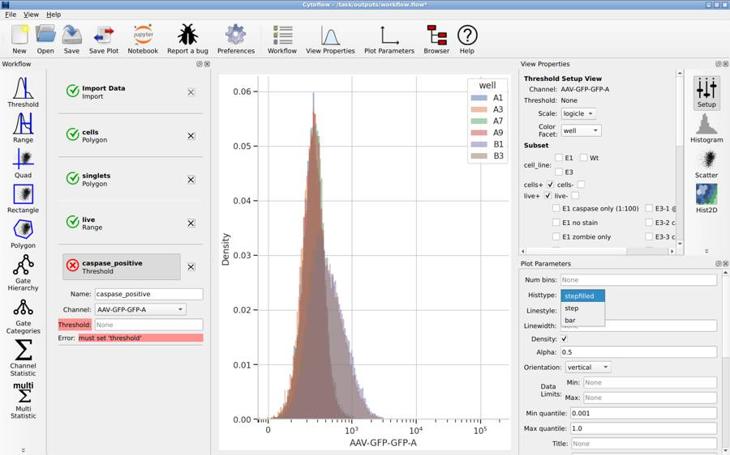
text(await tools.exec_command({cmd:"cu click 1127 609\ncu click 272 642\ncu type '2000'\ncu click 165 641\nsleep 2\ncu key ctrl+s\ncu click 46 692\nsleep 2\ncu screenshot /tmp/countstat.png","max_output_tokens":1000}));
image((await tools.view_image({path:"/tmp/countstat.png"})).image_url);
Script completed Wall time 4.6 seconds Output:
{"chunk_id":"ccea09","wall_time_seconds":4.462043987,"exit_code":0,"original_token_count":5,"output":"/tmp/countstat.png\n"}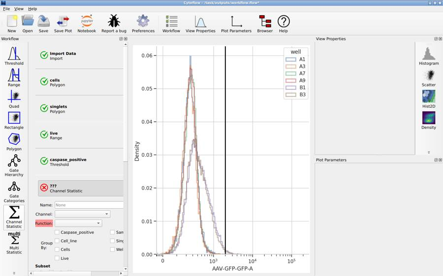
text(await tools.exec_command({cmd:"cu click 769 71\ncu drag 422 523 512 523\ncu click 249 668\ncu type 'Counts_all'\ncu click 347 698\nsleep 0.5\ncu screenshot /tmp/statchannel.png","max_output_tokens":1000}));
image((await tools.view_image({path:"/tmp/statchannel.png"})).image_url);
Script completed Wall time 1.2 seconds Output:
{"chunk_id":"4de865","wall_time_seconds":1.017080191,"exit_code":0,"original_token_count":6,"output":"/tmp/statchannel.png\n"}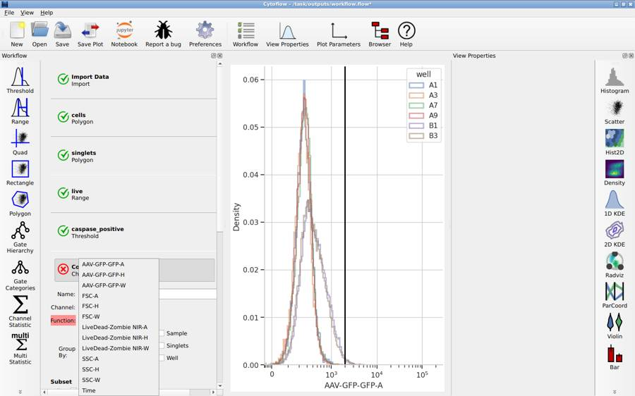
text(await tools.exec_command({cmd:"cu click 220 671\ncu click 319 729\nsleep 0.5\ncu screenshot /tmp/functions.png","max_output_tokens":1000}));
image((await tools.view_image({path:"/tmp/functions.png"})).image_url);
Script completed Wall time 0.8 seconds Output:
{"chunk_id":"345031","wall_time_seconds":0.619320504,"exit_code":0,"original_token_count":5,"output":"/tmp/functions.png\n"}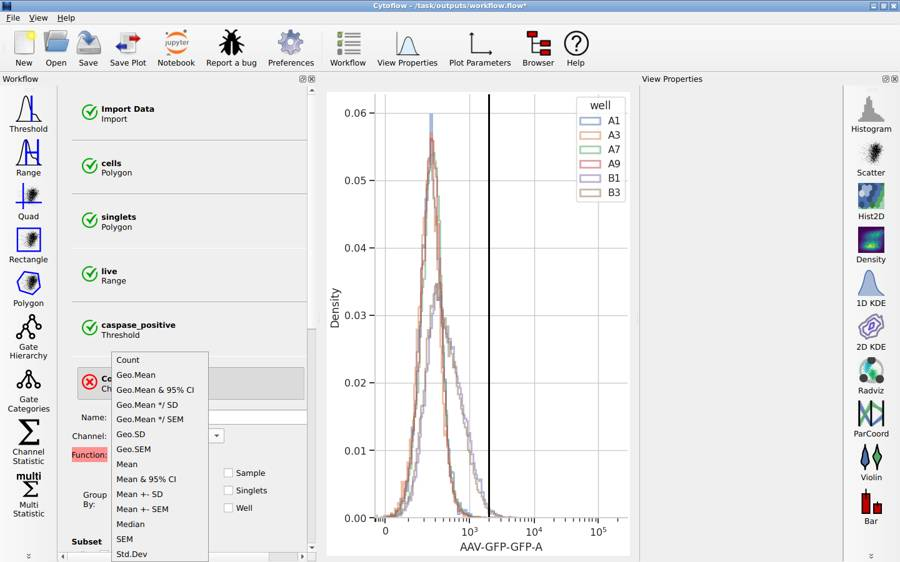
text(await tools.exec_command({cmd:"cu click 218 575\ncu click 365 812\ncu scroll 1393 821 down 6\nsleep 2\ncu screenshot /tmp/tableicon.png","max_output_tokens":1000}));
image((await tools.view_image({path:"/tmp/tableicon.png"})).image_url);
Script completed Wall time 2.9 seconds Output:
{"chunk_id":"1f923c","wall_time_seconds":2.725556767,"exit_code":0,"original_token_count":5,"output":"/tmp/tableicon.png\n"}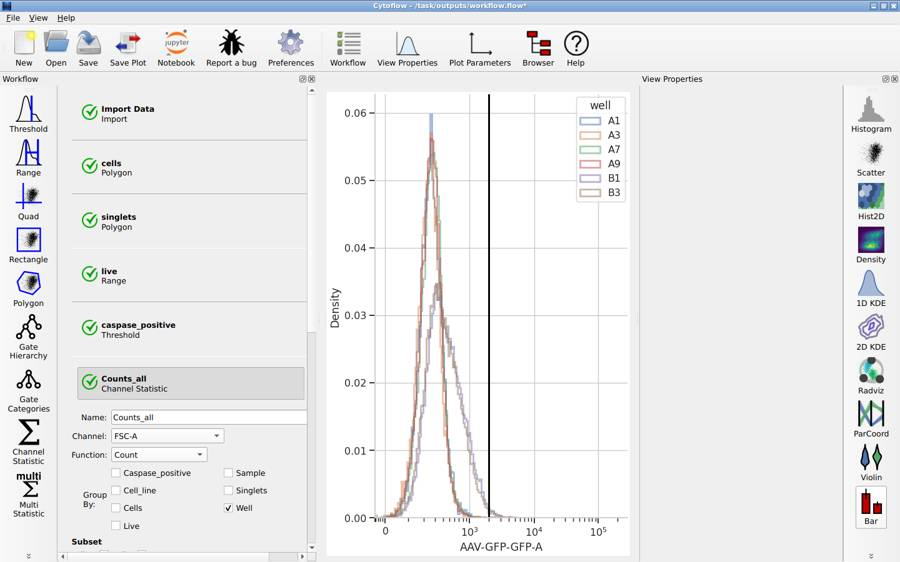
text(await tools.exec_command({cmd:"cu click 1393 891\ncu click 1393 891\ncu click 1393 891\nsleep 1\ncu screenshot /tmp/tableicon2.png","max_output_tokens":1000}));
image((await tools.view_image({path:"/tmp/tableicon2.png"})).image_url);
Script completed Wall time 1.4 seconds Output:
{"chunk_id":"b5b17b","wall_time_seconds":1.226237013,"exit_code":0,"original_token_count":5,"output":"/tmp/tableicon2.png\n"}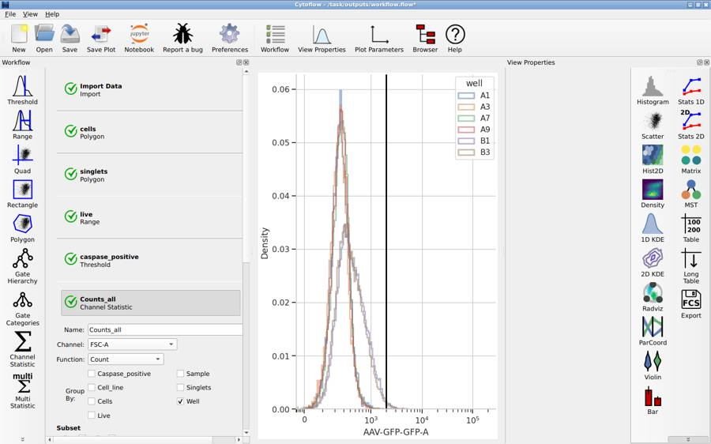
text(await tools.exec_command({cmd:"cu click 1401 456\nsleep 1\ncu screenshot /tmp/tableview.png","max_output_tokens":1000}));
image((await tools.view_image({path:"/tmp/tableview.png"})).image_url);
Script completed Wall time 1.2 seconds Output:
{"chunk_id":"854621","wall_time_seconds":1.017034742,"exit_code":0,"original_token_count":5,"output":"/tmp/tableview.png\n"}text(await tools.exec_command({cmd:"cu click 1198 180\nsleep 0.5\ncu screenshot /tmp/statselect.png","max_output_tokens":1000}));
image((await tools.view_image({path:"/tmp/statselect.png"})).image_url);
Script completed Wall time 0.7 seconds Output:
{"chunk_id":"d8a5b7","wall_time_seconds":0.515798495,"exit_code":0,"original_token_count":5,"output":"/tmp/statselect.png\n"}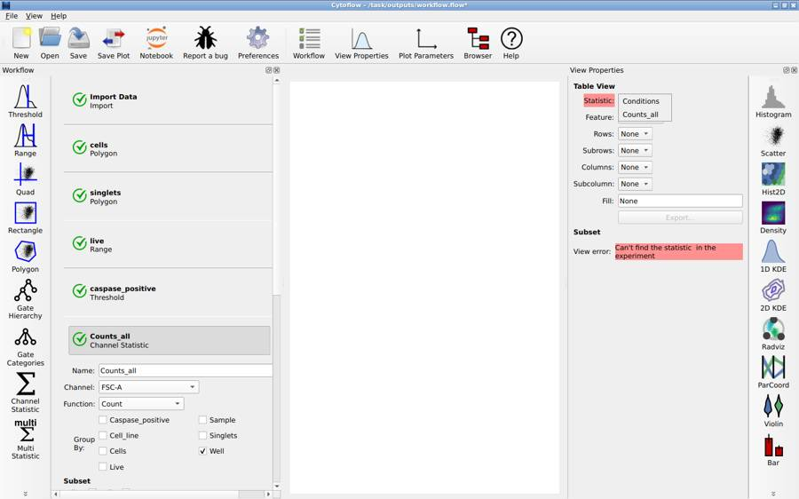
text(await tools.exec_command({cmd:"cu click 1158 204\ncu click 1184 212\nsleep 0.5\ncu screenshot /tmp/feature.png","max_output_tokens":1000}));
image((await tools.view_image({path:"/tmp/feature.png"})).image_url);
Script completed Wall time 0.8 seconds Output:
{"chunk_id":"f0984c","wall_time_seconds":0.620117435,"exit_code":0,"original_token_count":5,"output":"/tmp/feature.png\n"}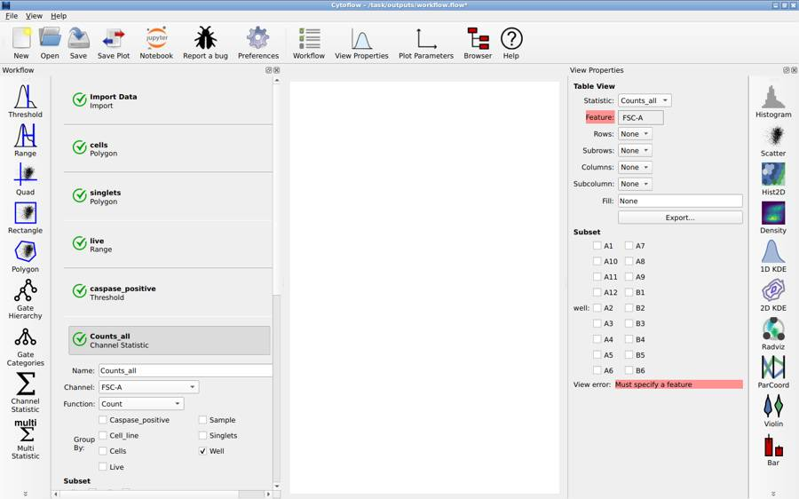
text(await tools.exec_command({cmd:"cu click 1145 211\ncu click 1165 240\nsleep 0.5\ncu screenshot /tmp/tablerows.png","max_output_tokens":1000}));
image((await tools.view_image({path:"/tmp/tablerows.png"})).image_url);
Script completed Wall time 0.8 seconds Output:
{"chunk_id":"250a37","wall_time_seconds":0.621478947,"exit_code":0,"original_token_count":5,"output":"/tmp/tablerows.png\n"}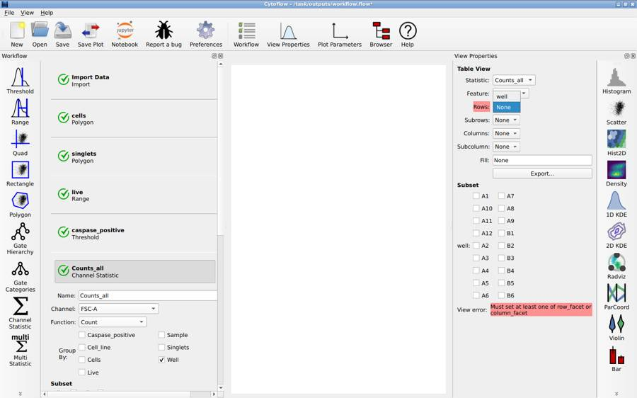
text(await tools.exec_command({cmd:"cu click 1136 217\nsleep 1\ncu click 1202 391\nsleep 1\ncu screenshot /tmp/exportall.png","max_output_tokens":1000}));
image((await tools.view_image({path:"/tmp/exportall.png"})).image_url);
Script completed Wall time 2.3 seconds Output:
{"chunk_id":"37dfb7","wall_time_seconds":2.12792768,"exit_code":0,"original_token_count":5,"output":"/tmp/exportall.png\n"}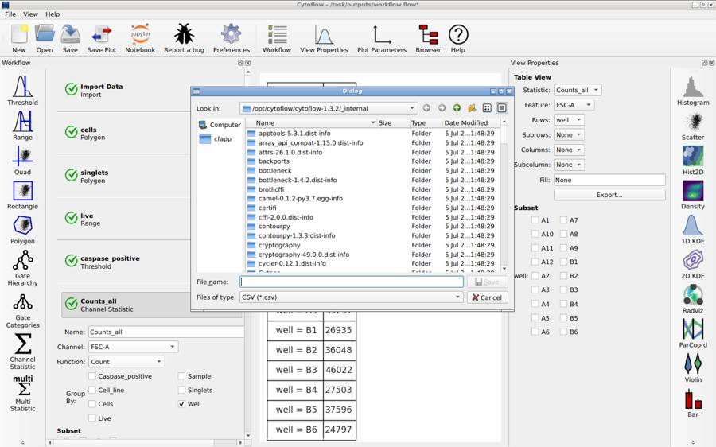
text(await tools.exec_command({cmd:"cu paste '/task/outputs/cytoflow_all.csv'\ncu click 977 566\nsleep 1\ncu key ctrl+s\ncu screenshot /tmp/alltable.png","max_output_tokens":1000}));
image((await tools.view_image({path:"/tmp/alltable.png"})).image_url);
text(await tools.exec_command({cmd:"cat /task/outputs/cytoflow_all.csv","max_output_tokens":3000}));
Script completed Wall time 2.6 seconds Output:
{"chunk_id":"d572b8","wall_time_seconds":2.377117861,"exit_code":0,"original_token_count":5,"output":"/tmp/alltable.png\n"}{"chunk_id":"f2cf30","wall_time_seconds":0.00000338,"exit_code":0,"original_token_count":81,"output":"well = A1,6969.0\nwell = A10,58936.0\nwell = A11,51193.0\nwell = A12,51047.0\nwell = A2,3149.0\nwell = A3,5742.0\nwell = A4,20776.0\nwell = A5,13119.0\nwell = A6,21946.0\nwell = A7,33911.0\nwell = A8,52749.0\nwell = A9,49297.0\nwell = B1,26935.0\nwell = B2,36048.0\nwell = B3,46022.0\nwell = B4,27503.0\nwell = B5,37596.0\nwell = B6,24797.0\n"}text(await tools.exec_command({cmd:"cu click 254 670\ncu key ctrl+a\ncu type 'Gate_counts'\ncu click 184 757\ncu click 185 812\ncu click 365 785\ncu click 185 840\nsleep 2\ncu click 1393 890\nsleep 0.5\ncu screenshot /tmp/allgroups.png","max_output_tokens":1000}));
image((await tools.view_image({path:"/tmp/allgroups.png"})).image_url);
Script completed Wall time 3.5 seconds Output:
{"chunk_id":"507215","wall_time_seconds":3.355616224,"exit_code":0,"original_token_count":5,"output":"/tmp/allgroups.png\n"}text(await tools.exec_command({cmd:"cu click 1400 528\nsleep 1\ncu screenshot /tmp/longtable.png","max_output_tokens":1000}));
image((await tools.view_image({path:"/tmp/longtable.png"})).image_url);
Script completed Wall time 1.2 seconds Output:
{"chunk_id":"19c2ba","wall_time_seconds":1.014368548,"exit_code":0,"original_token_count":5,"output":"/tmp/longtable.png\n"}text(await tools.exec_command({cmd:"cu click 1192 181\nsleep 0.5\ncu screenshot /tmp/longsel.png","max_output_tokens":1000}));
image((await tools.view_image({path:"/tmp/longsel.png"})).image_url);
Script completed Wall time 0.7 seconds Output:
{"chunk_id":"9210f3","wall_time_seconds":0.51205625,"exit_code":0,"original_token_count":5,"output":"/tmp/longsel.png\n"}text(await tools.exec_command({cmd:"cu click 1142 205\nsleep 1\ncu click 1153 211\nsleep 1\ncu screenshot /tmp/exportgate.png","max_output_tokens":1000}));
image((await tools.view_image({path:"/tmp/exportgate.png"})).image_url);
Script completed Wall time 2.3 seconds Output:
{"chunk_id":"e0c5c8","wall_time_seconds":2.126642918,"exit_code":0,"original_token_count":5,"output":"/tmp/exportgate.png\n"}text(await tools.exec_command({cmd:"cu paste '/task/outputs/cytoflow_gate_counts.csv'\ncu click 979 566\nsleep 1\ncu key ctrl+s\ncu screenshot /tmp/gatesexported.png","max_output_tokens":1000}));
image((await tools.view_image({path:"/tmp/gatesexported.png"})).image_url);
text(await tools.exec_command({cmd:"python - <<'PY'\nimport pandas as pd\np='/task/outputs/cytoflow_gate_counts.csv'\nd=pd.read_csv(p)\nprint(d.shape)\nprint(d.head().to_string(index=False))\nprint(d.columns.tolist())\nPY","max_output_tokens":3000}));
Script completed Wall time 2.6 seconds Output:
{"chunk_id":"b9bb90","wall_time_seconds":2.3710143329999998,"exit_code":0,"original_token_count":6,"output":"/tmp/gatesexported.png\n"}{"chunk_id":"3c9d57","wall_time_seconds":0.00000293,"exit_code":127,"original_token_count":12,"output":"/bin/bash: line 1: python: command not found\n"}text(await tools.exec_command({cmd:"python3 - <<'PY'\nimport pandas as pd\np='/task/outputs/cytoflow_gate_counts.csv'\nd=pd.read_csv(p)\nprint(d.shape)\nprint(d.head().to_string(index=False))\nprint(d.columns.tolist())\nPY","max_output_tokens":3000}));
text(await tools.clock__curr_time({}));
Script completed
Wall time 0.5 seconds
Output:
{"chunk_id":"84ff8a","wall_time_seconds":0.315196334,"exit_code":0,"original_token_count":99,"output":"(226, 6)\nwell caspase_positive cells singlets live FSC-A\n A1 0 0 0 1 577.0\n A1 0 0 1 1 19.0\n A1 0 1 0 1 114.0\n A1 0 1 1 1 6256.0\n A1 1 1 1 1 3.0\n['well', 'caspase_positive', 'cells', 'singlets', 'live', 'FSC-A']\n"}
{"current_time":"2026-11-06 00:39:39 UTC"}text(await tools.exec_command({cmd:"python3 - <<'PY'\nimport pandas as pd\nx=pd.read_csv('/task/outputs/cytoflow_gate_counts.csv')\nlayout=pd.read_csv('/task/inputs/plate_layout.csv')\nrows=[]\nfor r in layout.itertuples(index=False):\n d=x[x.well.eq(r.well)]\n masks=[pd.Series(True,index=d.index),d.cells.eq(1),d.cells.eq(1)&d.singlets.eq(1),d.cells.eq(1)&d.singlets.eq(1)&d.live.eq(1),d.cells.eq(1)&d.singlets.eq(1)&d.live.eq(1)&d.caspase_positive.eq(1)]\n ns=[int(d.loc[m,'FSC-A'].sum()) for m in masks]\n for i,(name,role) in enumerate(zip(['all_events','cells','singlets','live','caspase_positive'],['other','cells','singlets','live','marker_positive'])):\n rows.append(dict(file=r.file,well=r.well,population=name,role=role,parent='none' if i==0 else ['all_events','cells','singlets','live'][i-1],count=ns[i],pct_of_parent=100*ns[i]/ns[i-1] if i and ns[i-1] else None))\nd=pd.DataFrame(rows)\nd.to_csv('/task/outputs/counts.csv',index=False)\np=d.pivot(index='well',columns='population',values='count').reindex(layout.well)\np['cells_pct']=100*p.cells/p.all_events\np['live_pct']=100*p.live/p.singlets\np['positive_pct']=100*p.caspase_positive/p.live\nprint(p.round(3).to_string())\nPY","max_output_tokens":5000}));
Script completed
Wall time 0.3 seconds
Output:
{"chunk_id":"5ae740","wall_time_seconds":0.117004726,"exit_code":0,"original_token_count":500,"output":"population all_events caspase_positive cells live singlets cells_pct live_pct positive_pct\nwell \nA1 6969 3 6373 6259 6259 91.448 100.000 0.048\nA2 3149 20 2544 2507 2507 80.788 100.000 0.798\nA3 5742 0 5167 4964 5057 89.986 98.161 0.000\nA4 20776 84 19704 18784 19142 94.840 98.130 0.447\nA5 13119 71 12598 12081 12268 96.029 98.476 0.588\nA6 21946 122 21049 19933 20533 95.913 97.078 0.612\nA7 33911 2 32545 32133 32133 95.972 100.000 0.006\nA8 52749 80 51075 50191 50191 96.826 100.000 0.159\nA9 49297 5 47458 45335 46785 96.270 96.901 0.011\nA10 58936 91 56913 54158 55939 96.567 96.816 0.168\nA11 51193 92 49106 46821 48285 95.923 96.968 0.196\nA12 51047 128 48559 46016 47828 95.126 96.211 0.278\nB1 26935 177 23311 22694 22694 86.545 100.000 0.780\nB2 36048 678 31619 30826 30826 87.714 100.000 2.199\nB3 46022 210 40494 35618 39305 87.988 90.620 0.590\nB4 27503 298 24128 18955 23423 87.729 80.925 1.572\nB5 37596 554 33794 30962 32839 89.887 94.284 1.789\nB6 24797 219 22132 18187 21559 89.253 84.359 1.204\n"}text(await tools.exec_command({cmd:"cu click 1395 244\nsleep 1\ncu screenshot /tmp/qcscatter.png","max_output_tokens":1000}));
image((await tools.view_image({path:"/tmp/qcscatter.png"})).image_url);
Script completed Wall time 1.2 seconds Output:
{"chunk_id":"b1cf69","wall_time_seconds":1.018800144,"exit_code":0,"original_token_count":5,"output":"/tmp/qcscatter.png\n"}text(await tools.exec_command({cmd:"cu click 1302 180\ncu key End\ncu key Return\ncu click 1302 241\ncu key Home\ncu key Down\ncu key Down\ncu key Down\ncu key Return\ncu click 1256 371\nsleep 0.5\ncu screenshot /tmp/facetchoices.png","max_output_tokens":1000}));
image((await tools.view_image({path:"/tmp/facetchoices.png"})).image_url);
Script completed Wall time 1.0 seconds Output:
{"chunk_id":"afa136","wall_time_seconds":0.860137975,"exit_code":0,"original_token_count":6,"output":"/tmp/facetchoices.png\n"}text(await tools.exec_command({cmd:"cu click 1157 348\ncu click 769 71\nsleep 2\ncu screenshot /tmp/qcparams.png","max_output_tokens":1000}));
image((await tools.view_image({path:"/tmp/qcparams.png"})).image_url);
Script completed Wall time 2.3 seconds Output:
{"chunk_id":"1ddb96","wall_time_seconds":2.135443699,"exit_code":0,"original_token_count":5,"output":"/tmp/qcparams.png\n"}text(await tools.exec_command({cmd:"cu scroll 1276 818 down 6\nsleep 0.5\ncu screenshot /tmp/qcparams2.png","max_output_tokens":1000}));
image((await tools.view_image({path:"/tmp/qcparams2.png"})).image_url);
Script completed Wall time 1.2 seconds Output:
{"chunk_id":"97954a","wall_time_seconds":1.03198036,"exit_code":0,"original_token_count":5,"output":"/tmp/qcparams2.png\n"}text(await tools.exec_command({cmd:"cu click 1243 597\ncu key ctrl+a\ncu type '6'\ncu click 1070 598\ncu click 557 71\ncu click 650 71\ncu click 770 71\nsleep 3\ncu screenshot /tmp/time_fsc_grid.png","max_output_tokens":1000}));
image((await tools.view_image({path:"/tmp/time_fsc_grid.png"})).image_url);
Script completed Wall time 3.7 seconds Output:
{"chunk_id":"101092","wall_time_seconds":3.5629218529999998,"exit_code":0,"original_token_count":6,"output":"/tmp/time_fsc_grid.png\n"}text(await tools.exec_command({cmd:"cu screenshot /task/outputs/qc_time_fsc.png\ncu click 650 70\nsleep 0.5\ncu screenshot /tmp/viewwide.png","max_output_tokens":1000}));
image((await tools.view_image({path:"/tmp/viewwide.png"})).image_url);
Script completed Wall time 0.9 seconds Output:
{"chunk_id":"c0b10b","wall_time_seconds":0.69645036,"exit_code":0,"original_token_count":12,"output":"/task/outputs/qc_time_fsc.png\n/tmp/viewwide.png\n"}text(await tools.exec_command({cmd:"cu click 1302 241\ncu key Home\ncu key Down\ncu key Down\ncu key Down\ncu key Down\ncu key Down\ncu key Down\ncu key Return\ncu click 1190 270\ncu key End\ncu key Return\ncu click 650 70\nsleep 3\ncu screenshot /tmp/time_nir_grid.png","max_output_tokens":1000}));
image((await tools.view_image({path:"/tmp/time_nir_grid.png"})).image_url);
Script completed Wall time 3.6 seconds Output:
{"chunk_id":"8cca30","wall_time_seconds":3.401715352,"exit_code":0,"original_token_count":6,"output":"/tmp/time_nir_grid.png\n"}text(await tools.exec_command({cmd:"sleep 2\ncu screenshot /tmp/time_nir_grid2.png","max_output_tokens":1000}));
image((await tools.view_image({path:"/tmp/time_nir_grid2.png"})).image_url);
Script completed Wall time 2.1 seconds Output:
{"chunk_id":"9458e3","wall_time_seconds":1.9592176289999998,"exit_code":0,"original_token_count":6,"output":"/tmp/time_nir_grid2.png\n"}text(await tools.exec_command({cmd:"cu screenshot /task/outputs/qc_time_nir.png\ncu click 650 71\ncu click 1301 240\ncu key Home\ncu key Return\ncu click 650 71\nsleep 4\ncu screenshot /tmp/time_green.png","max_output_tokens":1000}));
image((await tools.view_image({path:"/tmp/time_green.png"})).image_url);
Script completed Wall time 4.6 seconds Output:
{"chunk_id":"854443","wall_time_seconds":4.434893303,"exit_code":0,"original_token_count":13,"output":"/task/outputs/qc_time_nir.png\n/tmp/time_green.png\n"}text(await tools.exec_command({cmd:"cu click 650 71\nsleep 1\ncu screenshot /tmp/yprops.png","max_output_tokens":1000}));
image((await tools.view_image({path:"/tmp/yprops.png"})).image_url);
Script completed Wall time 1.2 seconds Output:
{"chunk_id":"1a1943","wall_time_seconds":1.047034508,"exit_code":0,"original_token_count":4,"output":"/tmp/yprops.png\n"}text(await tools.exec_command({cmd:"cu click 1393 175\nsleep 1\ncu screenshot /tmp/timehistprops.png","max_output_tokens":1000}));
image((await tools.view_image({path:"/tmp/timehistprops.png"})).image_url);
Script completed Wall time 1.2 seconds Output:
{"chunk_id":"78a804","wall_time_seconds":1.014626208,"exit_code":0,"original_token_count":6,"output":"/tmp/timehistprops.png\n"}text(await tools.exec_command({cmd:"cu click 1274 181\ncu key End\ncu key Return\ncu click 1226 244\ncu key End\ncu key Up\ncu key Return\ncu click 769 71\nsleep 1\ncu screenshot /tmp/timehistparams.png","max_output_tokens":1000}));
image((await tools.view_image({path:"/tmp/timehistparams.png"})).image_url);
Script completed Wall time 1.5 seconds Output:
{"chunk_id":"b9841f","wall_time_seconds":1.3064430630000001,"exit_code":0,"original_token_count":6,"output":"/tmp/timehistparams.png\n"}text(await tools.exec_command({cmd:"cu click 1243 551\ncu type '20'\ncu click 1070 552\ncu scroll 1261 822 down 6\nsleep 1\ncu screenshot /tmp/timehistcols.png","max_output_tokens":1000}));
image((await tools.view_image({path:"/tmp/timehistcols.png"})).image_url);
Script completed Wall time 2.0 seconds Output:
{"chunk_id":"178011","wall_time_seconds":1.7814680470000002,"exit_code":0,"original_token_count":6,"output":"/tmp/timehistcols.png\n"}text(await tools.exec_command({cmd:"cu click 1263 685\ncu key ctrl+a\ncu type '6'\ncu click 1072 684\ncu click 650 70\ncu click 770 70\nsleep 5\ncu screenshot /tmp/time_rates.png","max_output_tokens":1000}));
image((await tools.view_image({path:"/tmp/time_rates.png"})).image_url);
Script completed Wall time 5.6 seconds Output:
{"chunk_id":"e35ef7","wall_time_seconds":5.385516871,"exit_code":0,"original_token_count":5,"output":"/tmp/time_rates.png\n"}text(await tools.exec_command({cmd:"sleep 2\ncu screenshot /tmp/time_rates2.png","max_output_tokens":1000}));
image((await tools.view_image({path:"/tmp/time_rates2.png"})).image_url);
Script completed Wall time 2.1 seconds Output:
{"chunk_id":"706810","wall_time_seconds":1.904699481,"exit_code":0,"original_token_count":6,"output":"/tmp/time_rates2.png\n"}text(await tools.exec_command({cmd:"cu screenshot /task/outputs/qc_event_rate.png\ncu click 650 71\nsleep 1\ncu click 1274 181\ncu key Home\ncu key Down\ncu key Down\ncu key Down\ncu key Down\ncu key Down\ncu key Down\ncu key Return\ncu click 1161 210\ncu key End\ncu key Return\ncu click 1086 518\ncu click 1107 815\nsleep 3\ncu screenshot /tmp/nir_hist_controls.png","max_output_tokens":1000}));
image((await tools.view_image({path:"/tmp/nir_hist_controls.png"})).image_url);
Script completed Wall time 4.8 seconds Output:
{"chunk_id":"208c1b","wall_time_seconds":4.651032424,"exit_code":0,"original_token_count":15,"output":"/task/outputs/qc_event_rate.png\n/tmp/nir_hist_controls.png\n"}text(await tools.exec_command({cmd:"cu click 650 71\nsleep 5\ncu screenshot /tmp/nir_hist_all.png","max_output_tokens":1000}));
image((await tools.view_image({path:"/tmp/nir_hist_all.png"})).image_url);
Script completed Wall time 5.2 seconds Output:
{"chunk_id":"d540c4","wall_time_seconds":5.011130774,"exit_code":0,"original_token_count":6,"output":"/tmp/nir_hist_all.png\n"}text(await tools.exec_command({cmd:"cu click 557 71\nsleep 1\ncu click 235 437\nsleep 1\ncu screenshot /tmp/liverevise.png","max_output_tokens":1000}));
image((await tools.view_image({path:"/tmp/liverevise.png"})).image_url);
Script completed Wall time 2.3 seconds Output:
{"chunk_id":"a02861","wall_time_seconds":2.118664258,"exit_code":0,"original_token_count":5,"output":"/tmp/liverevise.png\n"}text(await tools.exec_command({cmd:"cu click 278 584\ncu key ctrl+a\ncu type '100000'\ncu click 154 583\nsleep 2\ncu key ctrl+s\ncu click 249 736\ncu click 650 71\nsleep 2\ncu screenshot /tmp/reexport.png","max_output_tokens":1000}));
image((await tools.view_image({path:"/tmp/reexport.png"})).image_url);
Script completed Wall time 4.7 seconds Output:
{"chunk_id":"da16b0","wall_time_seconds":4.54473986,"exit_code":0,"original_token_count":5,"output":"/tmp/reexport.png\n"}text(await tools.exec_command({cmd:"cu click 1393 890\nsleep 0.5\ncu click 1400 529\nsleep 1\ncu click 1146 211\nsleep 1\ncu screenshot /tmp/reexportdialog.png","max_output_tokens":1000}));
image((await tools.view_image({path:"/tmp/reexportdialog.png"})).image_url);
text(await tools.exec_command({cmd:"mv /task/outputs/cytoflow_gate_counts.csv /task/outputs/sensitivity_live40000_counts.csv","max_output_tokens":1000}));
Script completed Wall time 2.9 seconds Output:
{"chunk_id":"9cbeb8","wall_time_seconds":2.7344760580000003,"exit_code":0,"original_token_count":6,"output":"/tmp/reexportdialog.png\n"}{"chunk_id":"394cab","wall_time_seconds":0.0000026,"exit_code":0,"original_token_count":0,"output":""}text(await tools.exec_command({cmd:"cu paste '/task/outputs/cytoflow_gate_counts.csv'\ncu click 976 568\nsleep 1\ncu key ctrl+s\ncu screenshot /tmp/countfinal.png","max_output_tokens":1000}));
image((await tools.view_image({path:"/tmp/countfinal.png"})).image_url);
text(await tools.exec_command({cmd:"python3 - <<'PY'\nimport pandas as pd\nx=pd.read_csv('/task/outputs/cytoflow_gate_counts.csv')\nx=x[x.cells.eq(1)&x.singlets.eq(1)&x.live.eq(1)]\np=x.groupby('well')['FSC-A'].sum().rename('live').to_frame()\np['positive']=x[x.caspase_positive.eq(1)].groupby('well')['FSC-A'].sum()\np['positive']=p.positive.fillna(0)\np['percent']=100*p.positive/p.live\nprint(p.round(3))\nPY","max_output_tokens":3000}));
Script completed Wall time 2.8 seconds Output:
{"chunk_id":"cc9f4d","wall_time_seconds":2.375021379,"exit_code":0,"original_token_count":5,"output":"/tmp/countfinal.png\n"}{"chunk_id":"de9769","wall_time_seconds":0.093698988,"exit_code":0,"original_token_count":165,"output":" live positive percent\nwell \nA1 6259.0 3.0 0.048\nA10 54916.0 97.0 0.177\nA11 47423.0 95.0 0.200\nA12 46659.0 133.0 0.285\nA2 2507.0 20.0 0.798\nA3 5003.0 0.0 0.000\nA4 18953.0 85.0 0.448\nA5 12177.0 74.0 0.608\nA6 20231.0 129.0 0.638\nA7 32133.0 2.0 0.006\nA8 50191.0 80.0 0.159\nA9 45928.0 5.0 0.011\nB1 22694.0 177.0 0.780\nB2 30826.0 678.0 2.199\nB3 38704.0 334.0 0.863\nB4 22989.0 491.0 2.136\nB5 32290.0 650.0 2.013\nB6 21157.0 401.0 1.895\n"}const r = await Promise.allSettled([
tools.web__run({search_query:[{q:'site.cellsignal.com 9669 cleaved caspase-3 Alexa Fluor 488 flow cytometry dilution staurosporine'},{q:'site.biolegend.com Zombie NIR fixable viability kit 423105 staining titration'}],response_length:"long"}),
tools.exec_command({cmd:"cu click 864 71\nsleep 1\ncu screenshot /tmp/channelmetadata.png","max_output_tokens":1000})
]);for(let i=0;i<r.length;i++)text({i,...r[i]});
image((await tools.view_image({path:"/tmp/channelmetadata.png"})).image_url);
Script completed Wall time 1.3 seconds Output:
{"i":0,"status":"fulfilled","value":"Cleaved Caspase-3 (Asp175) Antibody (Alexa Fluor® 488 Conjugate) | Cell Signaling Technology (https://www.cellsignal.com/products/antibody-conjugates/cleaved-caspase-3-asp175-antibody-alexa-fluor-488-conjugate/9669)\nciteturn0search0 [wordlim: 200] Published: 7 months ago; Crawled: last month; # Cleaved Caspase-3 (Asp175) Antibody (Alexa Fluor^{®} 488 Conjugate) #9669 ... This Cell Signaling Technology antibody is conjugated to Alexa Fluor^{®} 488 fluorescent dye and tested in-house for direct flow cytometry analysis in human cells.\n\n# Cleaved Caspase-3 (Asp175) Antibody (Alexa Fluor^{®} 488 Conjugate) #9669\n\nFilter:\n\n * F\n\nImage: Flow Cytometry Image 1: Cleaved Caspase-3 (Asp175) Antibody (Alexa Fluor® 488 Conjugate)\n\nFlow cytometric analysis of Jurkat cells, untreated (blue) or treated with etoposide #2200 (25 μM, overnight; green), using Cleaved Caspase-3 (Asp175) Antibody (Alexa Fluor^{®} 488 Conjugate) (solid lines) or concentration-matched Rabbit (DA1E) mAb IgG XP^{®} Isotype Control (Alexa Fluor^{®} 488 Conjugate) #2975 (dashed line).\n\nShow more\n\n1/1\n\nLearn more about how we get our images\n\nTo Purchase # 9669\n\nCat. # | Size | Qty. | Price\n--- | --- | --- | ---\n9669S | 100 µl 50 tests | [Input: 0] | $493\n\nCertificate of Analysis\n\n * Product Specifications\n * Related Products\n * Product Usage\n * Protocols\n * Background\n * Pathways\n\n### Product Specifications\n\nREACTIVITY | H M R Mk\nSENSITIVITY | Endogenous\nMW (kDa) | \nSOURCE | Rabbit\n\n##### Application Key:\n\n * F-Flow Cytometry \n\n##### Species Cross-Reactivity Key:\n\n * H-Human \n * M-Mouse \n * R-Rat \n * Mk-Monkey \n\n\n## Product Information\n\n### Product Description\n\nThis Cell Signaling Technology antibody is conjugated to Alexa Fluor^{®} 488 fluorescent dye and tested in-house for direct flow cytometry analysis in human cells. The antibody is expected to exhibit the same species cross-reactivity as the unconjugated Cleaved Caspase-3 (Asp175) Antibody #9661.\n\n### Product Usage Information\n\nApplication | Dilution\n--- | ---\nFlow Cytometry (Fixed/Permeabilized) | 1:50\n\n### Storage\n\nSupplied in PBS (pH 7.2), less than 0.1% sodium azide and 2 mg/ml BSA. Store at 4°C. Do not aliquot the antibody. Protect from light. Do not freeze.\n\n### Protocol\n\n[Select]\n\n### Specificity / Sensitivity\n\nCleaved Caspase-3 (Asp175) Antibody (Alexa Fluor^{®} 488 Conjugate) detects endogenous levels of the large fragment (17/19 kDa) of activated caspase-3 resulting from cleavage adjacent to aspartic acid 175. --------------------------------------------------------------------------------\nCleaved Caspase-3 (Asp175) Antibody (Alexa Fluor® 488 Conjugate) (#9669) Datasheet With Images | Cell Signaling Technology (https://www.cellsignal.com/products/9669/datasheet?images=1&protocol=0)\nciteturn0search1 [wordlim: 200] Crawled: last month; #9669 ... This Cell Signaling Technology antibody is conjugated to Alexa Fluor^{®} 488 fluorescent dye and tested in-house for direct flow cytometry analysis in human cells. ... Image: Flow Cytometry Image 1: Cleaved Caspase-3 (Asp175) Antibody (Alexa Fluor<sup>®</sup> 488 Conjugate)\n\nRevision 4\n\n#9669\n\nStore at +4C\n\nCleaved Caspase-3 (Asp175) Antibody (Alexa Fluor^{®} 488 Conjugate)\n\nFor Research Use Only. Not for Use in Diagnostic Procedures.\n\nApplications:\nFC-FP\n\nReactivity:\nH M R Mk\n\nSensitivity:\nEndogenous\n\nSource/Isotype:\nRabbit\n\nUniProt ID:\n#P42574\n\nEntrez-Gene Id:\n836\n\n### Product Usage Information\n\nApplication | Dilution\n--- | ---\nFlow Cytometry (Fixed/Permeabilized) | 1:50\n\n### Storage\n\nSupplied in PBS (pH 7.2), less than 0.1% sodium azide and 2 mg/ml BSA. Store at 4°C. Do not aliquot the antibody. Protect from light. Do not freeze.\n\n### Specificity/Sensitivity\n\nCleaved Caspase-3 (Asp175) Antibody (Alexa Fluor^{®} 488 Conjugate) detects endogenous levels of the large fragment (17/19 kDa) of activated caspase-3 resulting from cleavage adjacent to aspartic acid 175. This antibody conjugate does not recognize full length caspase-3 or other cleaved caspases.\n\n### Species predicted to react based on 100% sequence homology\n\nBovine, Dog, Pig\n\n### Source / Purification\n\nPolyclonal antibodies are produced by immunizing animals with a synthetic peptide corresponding to amino-terminal residues adjacent to Asp175 of human caspase-3. --------------------------------------------------------------------------------\nCleaved Caspase-3 (Asp175) Antibody (Alexa Fluor® 488 Conjugate) (#9669) Datasheet Without Images | Cell Signaling Technology (https://media.cellsignal.com/pdf/9669.pdf)\nciteturn0search12 [wordlim: 200] Published: last year; #9669 ... orders@cellsignal.com ... <td>This Cell Signaling Technology antibody is conjugated to Alexa Fluor® 488 fluorescent dye and tested in-house for direct flow cytometry analysis in human cells. ... The antibody is expected to exhibit the same species cross-reactivity as the unconjugated Cleaved Caspase-3 (Asp175) Antibody #9661.</td>\nRevision 4\n\nCleaved Caspase-3 (Asp175) Antibody (Alexa Fluor® 488 Conjugate)\n\nStore at +4C \n#9669\n\nCell Signaling Technology\n\nOrders: 877-616-CELL (2355) \norders@cellsignal.com\n\nSupport: 877-678-TECH (8324)\n\nWeb: info@cellsignal.com \ncellsignal.com\n\n3 Trask Lane | Danvers | Massachusetts | 01923 | USA\n\nFor Research Use Only. Not for Use in Diagnostic Procedures.\n\n<table id=\"e1\">\n<tr>\n<th>Applications:</th>\n<th>Reactivity:</th>\n<th>Sensitivity:</th>\n<th>Source/Isotype:</th>\n<th>UniProt ID:</th>\n<th>Entrez-Gene Id:</th>\n</tr>\n<tr>\n<td>FC-FP</td>\n<td>H M R Mk</td>\n<td>Endogenous</td>\n<td>Rabbit</td>\n<td>#P42574</td>\n<td>836</td>\n</tr>\n</table>\n\n<table id=\"e2\">\n<tr>\n<th>Product Usage Information</th>\n<th>Application</th>\n<th>Dilution</th>\n</tr>\n<tr>\n<td>Storage</td>\n<td>Flow Cytometry (Fixed/Permeabilized)</td>\n<td>1:50</td>\
… [24,413 more characters not shown]{"i":1,"status":"fulfilled","value":{"chunk_id":"befd23","wall_time_seconds":1.014058258,"exit_code":0,"original_token_count":7,"output":"/tmp/channelmetadata.png\n"}}text(await tools.exec_command({cmd:"cu click 43 536\ncu click 43 591\nsleep 0.5\ncu screenshot /tmp/metadatavals.png","max_output_tokens":1000}));
image((await tools.view_image({path:"/tmp/metadatavals.png"})).image_url);
Script completed Wall time 0.8 seconds Output:
{"chunk_id":"2f8226","wall_time_seconds":0.620388635,"exit_code":0,"original_token_count":6,"output":"/tmp/metadatavals.png\n"}text(await tools.exec_command({cmd:"cu click 43 667\nsleep 0.5\ncu screenshot /tmp/fscmeta.png","max_output_tokens":1000}));
image((await tools.view_image({path:"/tmp/fscmeta.png"})).image_url);
Script completed Wall time 0.7 seconds Output:
{"chunk_id":"230a17","wall_time_seconds":0.517752927,"exit_code":0,"original_token_count":5,"output":"/tmp/fscmeta.png\n"}text(await tools.exec_command({cmd:"cu click 43 797\ncu scroll 325 825 down 5\nsleep 0.5\ncu screenshot /tmp/nirmeta.png","max_output_tokens":1000}));
image((await tools.view_image({path:"/tmp/nirmeta.png"})).image_url);
Script completed Wall time 1.2 seconds Output:
{"chunk_id":"efe34f","wall_time_seconds":1.021710848,"exit_code":0,"original_token_count":5,"output":"/tmp/nirmeta.png\n"}text(await tools.exec_command({cmd:"cu click 865 71\nsleep 0.5\ncu click 260 613\ncu click 47 177\nsleep 1\ncu scroll 407 755 down 5\nsleep 0.5\ncu screenshot /tmp/qcgate1.png","max_output_tokens":1000}));
image((await tools.view_image({path:"/tmp/qcgate1.png"})).image_url);
Script completed Wall time 2.9 seconds Output:
{"chunk_id":"7dea97","wall_time_seconds":2.735996649,"exit_code":0,"original_token_count":5,"output":"/tmp/qcgate1.png\n"}text(await tools.exec_command({cmd:"cu click 272 754\ncu type 'fsc_ceiling'\ncu click 355 786\ncu key Home\ncu key Down\ncu key Down\ncu key Down\ncu key Return\ncu click 273 816\ncu type '1048000'\ncu click 164 815\nsleep 1\ncu click 47 178\nsleep 1\ncu scroll 397 762 down 5\nsleep 0.5\ncu screenshot /tmp/qcgate2.png","max_output_tokens":1000}));
image((await tools.view_image({path:"/tmp/qcgate2.png"})).image_url);
Script completed Wall time 4.2 seconds Output:
{"chunk_id":"37c240","wall_time_seconds":3.988005115,"exit_code":0,"original_token_count":5,"output":"/tmp/qcgate2.png\n"}text(await tools.exec_command({cmd:"cu click 280 786\ncu type 'ssc_ceiling'\ncu click 355 815\ncu key End\ncu key Up\ncu key Up\ncu key Up\ncu key Return\ncu click 271 846\ncu type '1048000'\ncu click 163 846\nsleep 1\ncu click 47 179\nsleep 1\ncu scroll 396 763 down 5\nsleep 0.5\ncu screenshot /tmp/qcgate3.png","max_output_tokens":1000}));
image((await tools.view_image({path:"/tmp/qcgate3.png"})).image_url);
Script completed Wall time 4.2 seconds Output:
{"chunk_id":"b9b30e","wall_time_seconds":3.990204647,"exit_code":0,"original_token_count":5,"output":"/tmp/qcgate3.png\n"}text(await tools.exec_command({cmd:"cu click 279 786\ncu type 'nir_ceiling'\ncu click 355 815\ncu key Home\ncu key Down\ncu key Down\ncu key Down\ncu key Down\ncu key Down\ncu key Down\ncu key Return\ncu click 272 846\ncu type '1048000'\ncu click 162 846\nsleep 1\ncu click 47 695\nsleep 1\ncu scroll 396 763 down 10\nsleep 0.5\ncu screenshot /tmp/qcstat.png","max_output_tokens":1000}));
image((await tools.view_image({path:"/tmp/qcstat.png"})).image_url);
Script completed Wall time 4.7 seconds Output:
{"chunk_id":"221271","wall_time_seconds":4.53647444,"exit_code":0,"original_token_count":4,"output":"/tmp/qcstat.png\n"}text(await tools.exec_command({cmd:"cu click 278 269\ncu type 'QC_counts'\ncu click 347 300\ncu key Home\ncu key Down\ncu key Down\ncu key Down\ncu key Return\ncu click 319 329\ncu key Home\ncu key Return\ncu click 185 443\ncu click 365 358\ncu click 365 443\ncu click 365 471\nsleep 2\ncu click 1393 890\nsleep 0.5\ncu click 1400 527\nsleep 1\ncu screenshot /tmp/qctable.png","max_output_tokens":1000}));
image((await tools.view_image({path:"/tmp/qctable.png"})).image_url);
Script completed Wall time 4.9 seconds Output:
{"chunk_id":"75bf7b","wall_time_seconds":4.706106472,"exit_code":0,"original_token_count":5,"output":"/tmp/qctable.png\n"}text(await tools.exec_command({cmd:"cu click 1190 181\ncu key End\ncu key Return\nsleep 1\ncu click 1150 211\nsleep 1\ncu screenshot /tmp/qcexport.png","max_output_tokens":1000}));
image((await tools.view_image({path:"/tmp/qcexport.png"})).image_url);
Script completed Wall time 2.3 seconds Output:
{"chunk_id":"90e61d","wall_time_seconds":2.16010875,"exit_code":0,"original_token_count":5,"output":"/tmp/qcexport.png\n"}text(await tools.exec_command({cmd:"cu paste '/task/outputs/cytoflow_qc_counts.csv'\ncu click 977 567\nsleep 1\ncu key ctrl+s\ncu screenshot /tmp/qcdone.png","max_output_tokens":1000}));
image((await tools.view_image({path:"/tmp/qcdone.png"})).image_url);
text(await tools.exec_command({cmd:"python3 - <<'PY'\nimport pandas as pd\nx=pd.read_csv('/task/outputs/cytoflow_qc_counts.csv')\nprint(x.shape,x.columns.tolist())\na=x.groupby('well')['FSC-A'].sum().rename('all').to_frame()\nfor c in ['fsc_ceiling','ssc_ceiling','nir_ceiling']:\n a[c]=x[x[c].eq(1)].groupby('well')['FSC-A'].sum().reindex(a.index,fill_value=0).astype(int)\n a[c+'_pct']=100*a[c]/a['all']\nprint(a.round(3).to_string())\nPY","max_output_tokens":4000}));
Script completed Wall time 2.8 seconds Output:
{"chunk_id":"05114a","wall_time_seconds":2.37604466,"exit_code":0,"original_token_count":4,"output":"/tmp/qcdone.png\n"}{"chunk_id":"ebca1f","wall_time_seconds":0.103266939,"exit_code":0,"original_token_count":538,"output":"(99, 5) ['fsc_ceiling', 'nir_ceiling', 'ssc_ceiling', 'well', 'FSC-A']\n all fsc_ceiling fsc_ceiling_pct ssc_ceiling ssc_ceiling_pct nir_ceiling nir_ceiling_pct\nwell \nA1 6969.0 9 0.129 12 0.172 0 0.000\nA10 58936.0 59 0.100 57 0.097 62 0.105\nA11 51193.0 38 0.074 50 0.098 74 0.145\nA12 51047.0 30 0.059 47 0.092 83 0.163\nA2 3149.0 3 0.095 12 0.381 0 0.000\nA3 5742.0 9 0.157 14 0.244 6 0.104\nA4 20776.0 67 0.322 46 0.221 19 0.091\nA5 13119.0 18 0.137 18 0.137 17 0.130\nA6 21946.0 38 0.173 28 0.128 41 0.187\nA7 33911.0 17 0.050 33 0.097 0 0.000\nA8 52749.0 36 0.068 52 0.099 0 0.000\nA9 49297.0 36 0.073 43 0.087 35 0.071\nB1 26935.0 788 2.926 973 3.612 0 0.000\nB2 36048.0 1056 2.929 1200 3.329 0 0.000\nB3 46022.0 1695 3.683 1836 3.989 148 0.322\nB4 27503.0 941 3.421 1006 3.658 130 0.473\nB5 37596.0 1356 3.607 1453 3.865 138 0.367\nB6 24797.0 678 2.734 821 3.311 94 0.379\n"}text(await tools.web__run({search_query:[{q:'H4 neuroglioma camptothecin caspase 3 apoptosis 10 μM 24 h'},{q:'H4 cells staurosporine cleaved caspase 3 apoptosis 1 uM 6 h'}],response_length:"long"}));
Script completed Wall time 0.9 seconds Output: Altered Processing of Amyloid Precursor Protein in Cells Undergoing Apoptosis (https://pmc.ncbi.nlm.nih.gov/articles/PMC3585261/) citeturn1search0 [wordlim: 200] Published: 13.7 years ago; Crawled: last month; In order to examine the proteolytic processing of APP during apoptosis, we treated H4 neuroglioma cells expressing human APP (H4-APP cells) with the DNA damaging agent camptothecin (CPT), a topoisomerase inhibitor [ref-type: bibr] [25] [Source reference: [Source link 25]], [ref-type: bibr] [26] [Source reference: [Source link 26]]. ... This was associated with the appearance of a lower band of ∼89 kDa, indicating caspase-mediated PARP cleavage was associated with the induction of apoptosis upon CPT treatment ([ref-type: fig] Figure 1E [Source reference: [Source link 36]] middle panel). ... (A) H4-APP cells were exposed to 10 µM CPT for zero to six hours and examined using brightfield microscopy. ## Results ### DNA damaging agents induce apoptosis in H4-APP neuroglioma cells In order to examine the proteolytic processing of APP during apoptosis, we treated H4 neuroglioma cells expressing human APP (H4-APP cells) with the DNA damaging agent camptothecin (CPT), a topoisomerase inhibitor [ref-type: bibr] [25] [Source reference: [Source link 25]], [ref-type: bibr] [26] [Source reference: [Source link 26]]. Cells were synchronized by serum starvation for 48 hours, then serum stimulated in the presence of 10 µM CPT for zero to six hours. Apoptosis induction was assessed by flow cytometry, light microscopy, and western blot analyses. Cellular shrinkage, nuclear condensation, and detachment, characteristics of cells undergoing apoptosis, were observed after three hours of CPT treatment and were more pronounced after six hours ([ref-type: fig] Figure 1A [Source reference: [Source link 27]]). Flow cytometric analysis of propidium iodide stained cells revealed a significant increase in the number of cells with sub-G1 DNA content, indicative of apoptosis ([ref-type: fig] Figure 1B and 1C [Source reference: [Source link 28]], control and CPT treated respectively). -------------------------------------------------------------------------------- Histone H4 is cleaved by granzyme A during staurosporine-induced cell death in B-lymphoid Raji cells (https://pmc.ncbi.nlm.nih.gov/articles/PMC5227298/) citeturn1search1 [wordlim: 200] Published: 10.0 years ago; Crawled: 3 weeks ago; Because STS induces apoptosis through a caspase-dependent pathway, we examined whether histone H4 cleavage could be prevented by treating the cells with the pan-caspase inhibitor Z-VAD-FMK [ref-type: bibr] (18) [Source reference: [Source link 19]]. ... ### Cleaving of histone H4 is during staurosporine-induced cell death in Raji cells. ... Poly ADP-ribose polymerase (PARP) and cleaved caspase-3 antibodies were used as a positive controls for cell death. ... Generally, 24-48 h after treatment with staurosporine and several other chemicals, Raji cells were harvested, washed in PBS, and lysed in 1× tricine sample buffer (50 mM Tris-HCl, pH 6.8, 150 mM NaCl, 20 mM DTT, 4% SDS, and 5% glycerol). Moreover, the increase of the histone H4 fragment was not dependent on the dose of STS used ([ref-type: fig] Fig. 1 [Source reference: [Source link 20]]C). We next checked whether histone H4 was cleaved in the presence of other cell death inducers such as etoposide, TNF-α, and cycloheximide ([ref-type: fig] Fig. 1 [Source reference: [Source link 21]]D, E). These chemicals did not induce histone H4 cleavage. Therefore, we showed that histone H4 is only cleaved in response to STS treatment in Raji B-lymphoid cells. Fig. 1. Caption: ### Cleaving of histone H4 is during staurosporine-induced cell death in Raji cells. (A) Raji cells were treated with 1 mM staurosporine (STS) and at 24 h, histone H4 was examined by immunoblot analysis using the indicated core histone antibodies and glyceraldehyde 3-phosphate dehydrogenase (GAPDH). (B) Histone H4 fragments were generated in response to a 24-h treatment with STS. Fragments were not observed after 3 and 6 h of treatment. (C) Cells were treated with 0.5, 1, 1.5, or 2 mM STS and 100 mM Z-VAD-FMK for 24 h. (D) Raji cell were treated with etoposide at 50, 100, 150, or 200 mM and 100 mM Z-VAD-FMK for 24 h. (E) Raji cells were treated with other inducers of cell death, TNF-α (50 ng) and cycloheximide (10 mg). Histone H4 fragments were examined by immunoblot analysis using the indicated antibodies. Poly ADP-ribose polymerase (PARP) and cleaved caspase-3 antibodies were used as a positive controls for cell death. [Source locator: BMB-49-560-g001.jpg] ### Treatment with caspase inhibitors increased both cell death and histone H4 cleavage Caspase inhibitors have been shown to block STS-induced apoptosis [ref-type: bibr] (19) [Source reference: [Source link 22]]. We attempted to inhibit histone H4 cleavage by treating cells with caspase inhibitors; however, histone H4 cleavage was detected in cells treated with inhibitors of caspase-6 (Z-VEID-FMK) and caspase-9 (Z-LEHD-FMK) ([ref-type: fig] Fig. 2 [Source reference: [Source link 23]]A). Treatment with these caspase inhibitors also increased cell death to a greater extent than STS treatment alone ([ref-type: fig] Fig. 2 [Source reference: [Source link 24]]B). Etoposide was used as a negative control for the cleavage of histone H4 in these experiments ([ref-type: fig] Fig. 2 [Source reference: [Source link 25]]). Recently, STS was reported to induce necroptotic cell death in the presence of caspase inhibitors [ref-type: bibr] (19) [Source reference: [Source link 26]]. These results indicated that STS-treated Raji cells might undergo necroptosis instead of apoptosis in the presence of caspase inhibitors. Fig. 2. Caption: ### The increased cell death and histone H4 cleavage in Raji cells treated with caspases inhibitors. (A) Raji cells were treated with 100 μM pan-caspase, caspase-6, or caspase-9 inh … [23,496 more characters not shown]
text(await tools.exec_command({cmd:"cu click 47 176\nsleep 1\ncu scroll 398 746 down 10\nsleep 0.5\ncu screenshot /tmp/strictgate.png","max_output_tokens":1000}));
image((await tools.view_image({path:"/tmp/strictgate.png"})).image_url);
Script completed Wall time 2.7 seconds Output:
{"chunk_id":"e62b1e","wall_time_seconds":2.52799022,"exit_code":0,"original_token_count":5,"output":"/tmp/strictgate.png\n"}text(await tools.exec_command({cmd:"cu click 279 786\ncu type 'caspase_strict'\ncu click 355 815\ncu key Home\ncu key Return\ncu click 271 846\ncu type '3000'\ncu click 163 845\nsleep 1\ncu click 47 692\nsleep 1\ncu scroll 397 750 down 10\nsleep 0.5\ncu screenshot /tmp/strictstat.png","max_output_tokens":1000}));
image((await tools.view_image({path:"/tmp/strictstat.png"})).image_url);
Script completed Wall time 4.6 seconds Output:
{"chunk_id":"2094cc","wall_time_seconds":4.444365735,"exit_code":0,"original_token_count":5,"output":"/tmp/strictstat.png\n"}text(await tools.exec_command({cmd:"cu click 279 269\ncu type 'Strict_counts'\ncu click 347 299\ncu key Home\ncu key Down\ncu key Down\ncu key Down\ncu key Return\ncu click 319 328\ncu key Home\ncu key Return\ncu click 185 387\ncu click 185 442\ncu click 185 500\ncu click 365 415\ncu click 365 471\nsleep 1\ncu click 1393 890\nsleep 0.5\ncu click 1400 527\nsleep 1\ncu click 1191 181\ncu key End\ncu key Return\nsleep 1\ncu click 1152 210\nsleep 1\ncu screenshot /tmp/strict_export.png","max_output_tokens":1000}));
image((await tools.view_image({path:"/tmp/strict_export.png"})).image_url);
Script completed Wall time 6.3 seconds Output:
{"chunk_id":"85456b","wall_time_seconds":6.158387417,"exit_code":0,"original_token_count":6,"output":"/tmp/strict_export.png\n"}text(await tools.exec_command({cmd:"cu paste '/task/outputs/cytoflow_strict_counts.csv'\ncu click 977 567\nsleep 1\ncu key ctrl+s\ncu screenshot /tmp/strict_done.png","max_output_tokens":1000}));
image((await tools.view_image({path:"/tmp/strict_done.png"})).image_url);
text(await tools.exec_command({cmd:"python3 - <<'PY'\nimport pandas as pd\nx=pd.read_csv('/task/outputs/cytoflow_strict_counts.csv')\nx=x[x.cells.eq(1)&x.singlets.eq(1)&x.live.eq(1)]\np=x.groupby('well')['FSC-A'].sum().rename('live').to_frame()\np['positive']=x[x.caspase_strict.eq(1)].groupby('well')['FSC-A'].sum().reindex(p.index,fill_value=0)\np['percent']=100*p.positive/p.live\nprint(p.round(4))\nPY","max_output_tokens":4000}));
Script completed Wall time 2.8 seconds Output:
{"chunk_id":"29de4a","wall_time_seconds":2.373767367,"exit_code":0,"original_token_count":6,"output":"/tmp/strict_done.png\n"}{"chunk_id":"ad4882","wall_time_seconds":0.086240177,"exit_code":0,"original_token_count":165,"output":" live positive percent\nwell \nA1 6259.0 0.0 0.0000\nA10 54916.0 74.0 0.1348\nA11 47423.0 77.0 0.1624\nA12 46659.0 113.0 0.2422\nA2 2507.0 16.0 0.6382\nA3 5003.0 0.0 0.0000\nA4 18953.0 68.0 0.3588\nA5 12177.0 67.0 0.5502\nA6 20231.0 111.0 0.5487\nA7 32133.0 2.0 0.0062\nA8 50191.0 68.0 0.1355\nA9 45928.0 0.0 0.0000\nB1 22694.0 30.0 0.1322\nB2 30826.0 351.0 1.1386\nB3 38704.0 70.0 0.1809\nB4 22989.0 262.0 1.1397\nB5 32290.0 266.0 0.8238\nB6 21157.0 188.0 0.8886\n"}text(await tools.exec_command({cmd:"python3 - <<'PY'\nimport pandas as pd\nx=pd.read_csv('/task/outputs/cytoflow_gate_counts.csv')\np=x[x.cells.eq(1)&x.singlets.eq(1)&x.live.eq(1)]\nq=p.groupby('well')['FSC-A'].sum().rename('live').to_frame()\nq['positive']=p[p.caspase_positive.eq(1)].groupby('well')['FSC-A'].sum().reindex(q.index,fill_value=0)\nq['raw']=100*q.positive/q.live\nfor c,ws,ctrl in [('WT',['A4','A5','A6'],'A3'),('E1',['A10','A11','A12'],'A9'),('E3',['B4','B5','B6'],'B3')]:\n v=q.loc[ws,'raw']-q.loc[ctrl,'raw']\n print(c,'FMO',q.loc[ctrl,'raw'],'100',v.iloc[0],'50 mean',v.iloc[1:].mean(),'50 sd',v.iloc[1:].std())\nPY","max_output_tokens":3000}));
text(await tools.clock__curr_time({}));
Script completed
Wall time 0.3 seconds
Output:
{"chunk_id":"c4f908","wall_time_seconds":0.090455404,"exit_code":0,"original_token_count":74,"output":"WT FMO 0.0 100 0.44847781353875377 50 mean 0.6226691794360827 50 sd 0.02116530785284228\nE1 FMO 0.010886605121059049 100 0.16574679862284072 50 mean 0.23179917791089966 50 sd 0.05990756589674523\nE3 FMO 0.8629599007854485 100 1.2728441794268268 50 mean 1.0912205524975498 50 sd 0.08319347406988523\n"}
{"current_time":"2026-11-06 00:48:34 UTC"}text(await tools.apply_patch("*** Begin Patch\n*** Add File: /task/outputs/analyse_exports.py\n+\"\"\"Tabulate Cytoflow-exported COUNT tables. This script never opens FCS files.\"\"\"\n+from pathlib import Path\n+import json\n+import numpy as np\n+import pandas as pd\n+import matplotlib\n+matplotlib.use('Agg')\n+import matplotlib.pyplot as plt\n+from matplotlib.lines import Line2D\n+\n+OUT = Path('/task/outputs')\n+layout = pd.read_csv('/task/inputs/plate_layout.csv')\n+g = pd.read_csv(OUT / 'cytoflow_gate_counts.csv')\n+q = pd.read_csv(OUT / 'cytoflow_qc_counts.csv')\n+s = pd.read_csv(OUT / 'cytoflow_strict_counts.csv')\n+total_export = pd.read_csv(OUT / 'cytoflow_all.csv', header=None, names=['well', 'count'])\n+total_export['well'] = total_export.well.str.replace('well = ', '', regex=False)\n+totals = total_export.set_index('well')['count'].astype(int)\n+\n+def summed(df, well, positives=()):\n+ z = df[df.well.eq(well)]\n+ for col in positives:\n+ z = z[z[col].eq(1)]\n+ n = z['FSC-A'].sum()\n+ assert float(n).is_integer()\n+ return int(n)\n+\n+spec = [\n+ ('all_events', 'other', 'none', g, ()),\n+ ('cells', 'cells', 'all_events', g, ('cells',)),\n+ ('singlets', 'singlets', 'cells', g, ('cells', 'singlets')),\n+ ('live', 'live', 'singlets', g, ('cells', 'singlets', 'live')),\n+ ('caspase_positive', 'marker_positive', 'live', g, ('cells', 'singlets', 'live', 'caspase_positive')),\n+ ('caspase_strict', 'other', 'live', s, ('cells', 'singlets', 'live', 'caspase_strict')),\n+ ('fsc_ceiling', 'other', 'all_events', q, ('fsc_ceiling',)),\n+ ('ssc_ceiling', 'other', 'all_events', q, ('ssc_ceiling',)),\n+ ('nir_ceiling', 'other', 'all_events', q, ('nir_ceiling',)),\n+]\n+rows = []\n+for r in layout.itertuples(index=False):\n+ ns = {}\n+ for name, role, parent, df, positive in spec:\n+ n = summed(df, r.well, positive)\n+ ns[name] = n\n+ rows.append([r.file, r.well, name, role, parent, n,\n+ 100*n/ns[parent] if parent != 'none' and ns[parent] else np.nan])\n+ assert ns['all_events'] == totals[r.well] == summed(q, r.well) == summed(s, r.well)\n+ assert ns['caspase_strict'] <= ns['caspase_positive'] <= ns['live'] <= ns['singlets'] <= ns['cells'] <= ns['all_events']\n+ assert summed(s, r.well, ('cells','singlets','live')) == ns['live']\n+counts = pd.DataFrame(rows, columns=['file','well','population','role','parent','count','pct_of_parent'])\n+counts.to_csv(OUT / 'counts.csv', index=False, float_format='%.9f')\n+p = counts.pivot(index='well', columns='population', values='count').reindex(layout.well)\n+p['raw_percent'] = 100*p.caspase_positive/p.live\n+p['strict_percent'] = 100*p.caspase_strict/p.live\n+p['live_percent'] = 100*p.live/p.singlets\n+\n+flags = []\n+for r in layout.itertuples(index=False):\n+ v = p.loc[r.well]\n+ if r.cell_line == 'E3':\n+ issue = 'saturation'\n+ evidence = (f\"FSC-A > 1048000: {int(v.fsc_ceiling)}/{int(v.all_events)} \"\n+ f\"({100*v.fsc_ceiling/v.all_events:.3f}%); SSC-A > 1048000: \"\n+ f\"{int(v.ssc_ceiling)}/{int(v.all_events)} ({100*v.ssc_ceiling/v.all_events:.3f}%). \"\n+ f\"Channel range is 1048576. Common scatter gate removes these edge events; \"\n+ f\"{int(v.live)} events remain in the cumulative live gate. Interpret only the retained population.\")\n+ decision = 'keep_with_note'\n+ elif r.well == 'A2':\n+ issue = 'too_few_events'\n+ evidence = (f\"Only {int(v.all_events)} acquired events and {int(v.live)} in the cumulative NIR-low gate; \"\n+ f\"{int(v.caspase_positive)} above the caspase threshold ({v.raw_percent:.3f}%). \"\n+ \"Limited precision for a rare-positive fraction; retain as the caspase-only control, not a dual-stain replicate.\")\n+ decision = 'keep_with_note'\n+ else:\n+ issue, evidence, decision = 'none', '', 'keep'\n+ flags.append([r.file,r.well,issue,evidence,decision])\n+flags = pd.DataFrame(flags, columns=['file','well','issue_type','evidence','decision'])\n+flags.to_csv(OUT / 'flags.csv', index=False)\n+\n+groups = {\n+ 'WT': {'unstained':['A1'], 'caspase only 1:100':['A2'], 'Zombie only':['A3'], 'dual stain 1:100':['A4'], 'dual stain 1:50':['A5','A6']},\n+ 'E1': {'unstained':['A7'], 'caspase only 1:100':['A8'], 'Zombie only':['A9'], 'dual stain 1:100':['A10'], 'dual stain 1:50':['A11','A12']},\n+ 'E3': {'unstained':['B1'], 'caspase only 1:100':['B2'], 'Zombie only':['B3'], 'dual stain 1:100':['B4'], 'dual stain 1:50':['B5','B6']},\n+}\n+summary, well_metrics = [], []\n+for line, conditions in groups.items():\n+ ref = conditions['Zombie only'][0]\n+ for label, wells in conditions.items():\n+ condition = f'{line} {label}'\n+ corrected = label.startswith('dual')\n+ values = p.loc[wells,'raw_percent'].copy()\n+ strict = p.loc[wells,'strict_percent'].copy()\n+ norm = 'none'\n+ metric = '100 * caspase_positive / live (% of cumulative gated events)'\n+ if corrected:\n+ values -= p.loc[ref,'raw_percent']\n+ strict -= p.loc[ref,'strict_percent']\n+ norm = f'100*(caspase_positive/live)_well - 100*(caspase_positive/live)_{ref}'\n+ metric = '100 * caspase_positive / live; matched-background-subtracted percentage points'\n+ summary.append([condition,';'.join(wells),len(wells),values.mean(),values.std(ddof=1) if len(wells)>1 else np.nan,metric,norm])\n+ for well in wells:\n+ well_metrics.append([well,line,label,condition,int(p.loc[well,'live']),int(p.loc[well,'caspase_positive']),\n+ p.loc[well,'raw_percent'],p.loc[ref,'raw_percent'] if corrected else np.nan,\n+ values.loc[well],strict.loc[well]])\n+summary = pd.DataFrame(summary, columns=['condition','wells','n_wells_used','mean
… [20,450 more characters not shown]Script completed
Wall time 0.0 seconds
Output:
{}text(await tools.exec_command({cmd:"python3 /task/outputs/analyse_exports.py\nmv /task/outputs/sensitivity_live40000_counts.csv /tmp/provisional_live40000_counts.csv","max_output_tokens":7000}));
image((await tools.view_image({path:"/task/outputs/figure.png"})).image_url);
Script completed Wall time 1.4 seconds Output:
{"chunk_id":"cedc8c","wall_time_seconds":1.218894524,"exit_code":0,"original_token_count":839,"output":" condition wells n_wells_used mean sd metric_definition normalisation_applied\n WT unstained A1 1 0.047931 NaN 100 * caspase_positive / live (% of cumulative gated events) none\nWT caspase only 1:100 A2 1 0.797766 NaN 100 * caspase_positive / live (% of cumulative gated events) none\n WT Zombie only A3 1 0.000000 NaN 100 * caspase_positive / live (% of cumulative gated events) none\n WT dual stain 1:100 A4 1 0.448478 NaN 100 * caspase_positive / live; matched-background-subtracted percentage points 100*(caspase_positive/live)_well - 100*(caspase_positive/live)_A3\n WT dual stain 1:50 A5;A6 2 0.622669 0.021165 100 * caspase_positive / live; matched-background-subtracted percentage points 100*(caspase_positive/live)_well - 100*(caspase_positive/live)_A3\n E1 unstained A7 1 0.006224 NaN 100 * caspase_positive / live (% of cumulative gated events) none\nE1 caspase only 1:100 A8 1 0.159391 NaN 100 * caspase_positive / live (% of cumulative gated events) none\n E1 Zombie only A9 1 0.010887 NaN 100 * caspase_positive / live (% of cumulative gated events) none\n E1 dual stain 1:100 A10 1 0.165747 NaN 100 * caspase_positive / live; matched-background-subtracted percentage points 100*(caspase_positive/live)_well - 100*(caspase_positive/live)_A9\n E1 dual stain 1:50 A11;A12 2 0.231799 0.059908 100 * caspase_positive / live; matched-background-subtracted percentage points 100*(caspase_positive/live)_well - 100*(caspase_positive/live)_A9\n E3 unstained B1 1 0.779942 NaN 100 * caspase_positive / live (% of cumulative gated events) none\nE3 caspase only 1:100 B2 1 2.199442 NaN 100 * caspase_positive / live (% of cumulative gated events) none\n E3 Zombie only B3 1 0.862960 NaN 100 * caspase_positive / live (% of cumulative gated events) none\n E3 dual stain 1:100 B4 1 1.272844 NaN 100 * caspase_positive / live; matched-background-subtracted percentage points 100*(caspase_positive/live)_well - 100*(caspase_positive/live)_B3\n E3 dual stain 1:50 B5;B6 2 1.091221 0.083193 100 * caspase_positive / live; matched-background-subtracted percentage points 100*(caspase_positive/live)_well - 100*(caspase_positive/live)_B3\n\nAll deliverable consistency checks passed.\n"}text(await tools.exec_command({cmd:"cu scroll 398 364 up 30\nsleep 1\ncu click 246 266\nsleep 1\ncu screenshot /tmp/cellsfinal.png","max_output_tokens":1000}));
image((await tools.view_image({path:"/tmp/cellsfinal.png"})).image_url);
Script completed Wall time 5.2 seconds Output:
{"chunk_id":"5ec9b5","wall_time_seconds":5.042255752,"exit_code":0,"original_token_count":5,"output":"/tmp/cellsfinal.png\n"}text(await tools.exec_command({cmd:"cu screenshot /task/outputs/gate_cells.png\ncu click 245 442\nsleep 2\ncu screenshot /task/outputs/gate_singlets.png","max_output_tokens":1000}));
image((await tools.view_image({path:"/task/outputs/gate_singlets.png"})).image_url);
Script completed Wall time 2.3 seconds Output:
{"chunk_id":"eb3984","wall_time_seconds":2.098042252,"exit_code":0,"original_token_count":16,"output":"/task/outputs/gate_cells.png\n/task/outputs/gate_singlets.png\n"}text(await tools.exec_command({cmd:"cu click 252 529\nsleep 1\ncu screenshot /tmp/livepropsfinal.png","max_output_tokens":1000}));
image((await tools.view_image({path:"/tmp/livepropsfinal.png"})).image_url);
Script completed Wall time 1.2 seconds Output:
{"chunk_id":"4c889d","wall_time_seconds":1.021422677,"exit_code":0,"original_token_count":6,"output":"/tmp/livepropsfinal.png\n"}text(await tools.exec_command({cmd:"cu click 1075 643\ncu click 1075 755\ncu click 1075 671\ncu click 1134 699\ncu click 1134 783\ncu click 1134 811\ncu click 769 71\nsleep 1\ncu screenshot /tmp/livenormparams.png","max_output_tokens":1000}));
image((await tools.view_image({path:"/tmp/livenormparams.png"})).image_url);
Script completed Wall time 1.8 seconds Output:
{"chunk_id":"6e4838","wall_time_seconds":1.6548201580000002,"exit_code":0,"original_token_count":6,"output":"/tmp/livenormparams.png\n"}text(await tools.exec_command({cmd:"cu click 1113 663\ncu click 1182 577\ncu key Home\ncu key Down\ncu key Return\ncu click 769 71\nsleep 3\ncu screenshot /task/outputs/gate_live.png\ncu key ctrl+s","max_output_tokens":1000}));
image((await tools.view_image({path:"/task/outputs/gate_live.png"})).image_url);
Script completed Wall time 3.5 seconds Output:
{"chunk_id":"158f55","wall_time_seconds":3.305711942,"exit_code":0,"original_token_count":7,"output":"/task/outputs/gate_live.png\n"}text(await tools.exec_command({cmd:"cu click 245 645\nsleep 2\ncu screenshot /task/outputs/gate_caspase_controls.png\ncu key ctrl+s","max_output_tokens":1000}));
image((await tools.view_image({path:"/task/outputs/gate_caspase_controls.png"})).image_url);
Script completed Wall time 2.2 seconds Output:
{"chunk_id":"6c41d7","wall_time_seconds":2.050113633,"exit_code":0,"original_token_count":10,"output":"/task/outputs/gate_caspase_controls.png\n"}text(await tools.exec_command({cmd:"cu key ctrl+o\nsleep 1\ncu screenshot /tmp/reopen.png","max_output_tokens":1000}));
image((await tools.view_image({path:"/tmp/reopen.png"})).image_url);
Script completed Wall time 1.1 seconds Output:
{"chunk_id":"e700d1","wall_time_seconds":0.946977403,"exit_code":0,"original_token_count":4,"output":"/tmp/reopen.png\n"}text(await tools.exec_command({cmd:"cu click 691 577\ncu paste '/task/outputs/workflow.flow'\ncu click 980 577\nsleep 1\ncu screenshot /tmp/reopenrun.png","max_output_tokens":1000}));
image((await tools.view_image({path:"/tmp/reopenrun.png"})).image_url);
Script completed Wall time 2.6 seconds Output:
{"chunk_id":"feb093","wall_time_seconds":2.45584763,"exit_code":0,"original_token_count":5,"output":"/tmp/reopenrun.png\n"}text(await tools.exec_command({cmd:"cu click 980 577\nsleep 1\ncu screenshot /tmp/reopenyes.png","max_output_tokens":1000}));
image((await tools.view_image({path:"/tmp/reopenyes.png"})).image_url);
Script completed Wall time 1.2 seconds Output:
{"chunk_id":"569f12","wall_time_seconds":1.012602775,"exit_code":0,"original_token_count":5,"output":"/tmp/reopenyes.png\n"}text(await tools.exec_command({cmd:"cu click 743 427\nsleep 15\ncu screenshot /tmp/reloaded.png","max_output_tokens":1000}));
image((await tools.view_image({path:"/tmp/reloaded.png"})).image_url);
Script failed
Wall time 10.2 seconds
Output:
{"chunk_id":"c50ec2","wall_time_seconds":10.000624711,"session_id":89183,"original_token_count":0,"output":""}
Script error:
unable to locate image at `/tmp/reloaded.png`: No such file or directory (os error 2)text(await tools.write_stdin({session_id:89183,chars:"","yield_time_ms":10000,"max_output_tokens":1000}));
image((await tools.view_image({path:"/tmp/reloaded.png"})).image_url);
Script completed Wall time 1.2 seconds Output:
{"chunk_id":"aa1415","wall_time_seconds":1.166256828,"exit_code":0,"original_token_count":5,"output":"/tmp/reloaded.png\n"}text(await tools.exec_command({cmd:"cu click 250 611\nsleep 1\ncu screenshot /tmp/reloadgateview.png","max_output_tokens":1000}));
image((await tools.view_image({path:"/tmp/reloadgateview.png"})).image_url);
Script completed Wall time 1.2 seconds Output:
{"chunk_id":"0914c2","wall_time_seconds":1.017003221,"exit_code":0,"original_token_count":6,"output":"/tmp/reloadgateview.png\n"}text(await tools.exec_command({cmd:"cu click 1151 211\nsleep 0.7\ncu paste '/tmp/reloaded_gate_counts.csv'\ncu click 978 567\nsleep 1\ncu scroll 397 753 down 10\nsleep 1\ncu screenshot /tmp/reloadqclocation.png","max_output_tokens":1000}));
image((await tools.view_image({path:"/tmp/reloadqclocation.png"})).image_url);
Script completed Wall time 5.3 seconds Output:
{"chunk_id":"0e6e71","wall_time_seconds":5.166507817,"exit_code":0,"original_token_count":7,"output":"/tmp/reloadqclocation.png\n"}text(await tools.exec_command({cmd:"cu scroll 399 753 down 12\nsleep 1\ncu screenshot /tmp/reloadqclocation2.png","max_output_tokens":1000}));
image((await tools.view_image({path:"/tmp/reloadqclocation2.png"})).image_url);
text(await tools.exec_command({cmd:"python3 - <<'PY'\nimport pandas as pd\nfrom pandas.testing import assert_frame_equal\na=pd.read_csv('/task/outputs/cytoflow_gate_counts.csv')\nb=pd.read_csv('/tmp/reloaded_gate_counts.csv')\ncols=sorted(a.columns)\nassert_frame_equal(a.sort_values(cols).reset_index(drop=True)[cols],b.sort_values(cols).reset_index(drop=True)[cols])\nprint('Reopened workflow: Gate_counts reproduced exactly.')\nPY","max_output_tokens":1000}));
Script completed Wall time 2.5 seconds Output:
{"chunk_id":"1702c4","wall_time_seconds":2.117367547,"exit_code":0,"original_token_count":7,"output":"/tmp/reloadqclocation2.png\n"}{"chunk_id":"a40619","wall_time_seconds":0.093132967,"exit_code":0,"original_token_count":13,"output":"Reopened workflow: Gate_counts reproduced exactly.\n"}text(await tools.exec_command({cmd:"cu click 244 653\nsleep 1\ncu click 1151 211\nsleep 0.7\ncu paste '/tmp/reloaded_qc_counts.csv'\ncu click 977 567\nsleep 1\ncu scroll 399 753 down 18\nsleep 1\ncu screenshot /tmp/reloadstrictlocation.png","max_output_tokens":1000}));
image((await tools.view_image({path:"/tmp/reloadstrictlocation.png"})).image_url);
Script completed Wall time 7.2 seconds Output:
{"chunk_id":"8572aa","wall_time_seconds":7.07234406,"exit_code":0,"original_token_count":8,"output":"/tmp/reloadstrictlocation.png\n"}text(await tools.exec_command({cmd:"cu click 246 827\nsleep 1\ncu click 1151 211\nsleep 0.7\ncu paste '/tmp/reloaded_strict_counts.csv'\ncu click 977 567\nsleep 1\ncu screenshot /tmp/reloadstrictdone.png","max_output_tokens":1000}));
image((await tools.view_image({path:"/tmp/reloadstrictdone.png"})).image_url);
text(await tools.exec_command({cmd:"python3 - <<'PY'\nimport pandas as pd\nfrom pandas.testing import assert_frame_equal\nfrom pathlib import Path\nlines=[]\nfor label in ['gate','qc','strict']:\n a=pd.read_csv(f'/task/outputs/cytoflow_{label}_counts.csv')\n b=pd.read_csv(f'/tmp/reloaded_{label}_counts.csv')\n cols=sorted(a.columns)\n assert_frame_equal(a.sort_values(cols).reset_index(drop=True)[cols],b.sort_values(cols).reset_index(drop=True)[cols])\n lines.append(f'{label}: all {len(a)} exported count bins reproduced exactly after reopening workflow.flow and running all raw files.')\nPath('/task/outputs/reproducibility_check.txt').write_text('\\n'.join(lines)+'\\nFull-data import: 18 files; 567735 events.\\n')\nprint('\\n'.join(lines))\nPY","max_output_tokens":2000}));
Script completed Wall time 4.8 seconds Output:
{"chunk_id":"81e1f3","wall_time_seconds":4.269511526,"exit_code":0,"original_token_count":7,"output":"/tmp/reloadstrictdone.png\n"}{"chunk_id":"7aa26c","wall_time_seconds":0.150765759,"exit_code":0,"original_token_count":83,"output":"gate: all 218 exported count bins reproduced exactly after reopening workflow.flow and running all raw files.\nqc: all 99 exported count bins reproduced exactly after reopening workflow.flow and running all raw files.\nstrict: all 205 exported count bins reproduced exactly after reopening workflow.flow and running all raw files.\n"}text(await tools.exec_command({cmd:"python3 - <<'PY'\np='/task/outputs/analyse_exports.py'\ns=open(p).read()\ns=s.replace(\"fig.suptitle('H4 cleaved-caspase-3 ICFC: weak, clone-dependent basal signal'\", \"fig.suptitle('H4 cleaved-caspase-3 ICFC: basal signal and background'\")\ns=s.replace(\"ax.annotate(well,(xx,yy),xytext=(0,9 if well not in ['A6','A12','B6'] else -16),\\n textcoords='offset points',ha='center',fontsize=8,color=colors[label])\", \"label_offset = (-8,7) if well == 'A11' else (8,0) if well == 'A12' else (0,9 if well not in ['A6','B6'] else -16)\\n label_align = 'right' if well == 'A11' else 'left' if well == 'A12' else 'center'\\n ax.annotate(well,(xx,yy),xytext=label_offset,\\n textcoords='offset points',ha=label_align,fontsize=8,color=colors[label])\")\ns=s.replace('QC branches are independent of the biological sequence.', 'QC branches are independent of the biological sequence. After saving, the workflow was reopened and rerun on all raw files; all 218 primary, 99 QC and 205 strict-threshold count bins reproduced exactly (see `reproducibility_check.txt`).')\ns=s.replace('## Results\\n+','## Results\\n+') if False else s\ns=s.replace('## Results\\n\\n{main_table()}', '## Results\\n\\n\\n\\n{main_table()}')\ns=s.replace('CST lists **1:50** for fixed/permeabilised flow,', '[CST lists **1:50**](https://www.cellsignal.com/products/antibody-conjugates/cleaved-caspase-3-asp175-antibody-alexa-fluor-488-conjugate/9669) for fixed/permeabilised flow,')\nopen(p,'w').write(s)\nPY\npython3 /task/outputs/analyse_exports.py","max_output_tokens":1500}));
image((await tools.view_image({path:"/task/outputs/figure.png"})).image_url);
Script completed Wall time 0.9 seconds Output:
{"chunk_id":"a7968d","wall_time_seconds":0.667023034,"exit_code":0,"original_token_count":839,"output":" condition wells n_wells_used mean sd metric_definition normalisation_applied\n WT unstained A1 1 0.047931 NaN 100 * caspase_positive / live (% of cumulative gated events) none\nWT caspase only 1:100 A2 1 0.797766 NaN 100 * caspase_positive / live (% of cumulative gated events) none\n WT Zombie only A3 1 0.000000 NaN 100 * caspase_positive / live (% of cumulative gated events) none\n WT dual stain 1:100 A4 1 0.448478 NaN 100 * caspase_positive / live; matched-background-subtracted percentage points 100*(caspase_positive/live)_well - 100*(caspase_positive/live)_A3\n WT dual stain 1:50 A5;A6 2 0.622669 0.021165 100 * caspase_positive / live; matched-background-subtracted percentage points 100*(caspase_positive/live)_well - 100*(caspase_positive/live)_A3\n E1 unstained A7 1 0.006224 NaN 100 * caspase_positive / live (% of cumulative gated events) none\nE1 caspase only 1:100 A8 1 0.159391 NaN 100 * caspase_positive / live (% of cumulative gated events) none\n E1 Zombie only A9 1 0.010887 NaN 100 * caspase_positive / live (% of cumulative gated events) none\n E1 dual stain 1:100 A10 1 0.165747 NaN 100 * caspase_positive / live; matched-background-subtracted percentage points 100*(caspase_positive/live)_well - 100*(caspase_positive/live)_A9\n E1 dual stain 1:50 A11;A12 2 0.231799 0.059908 100 * caspase_positive / live; matched-background-subtracted percentage points 100*(caspase_positive/live)_well - 100*(caspase_positive/live)_A9\n E3 unstained B1 1 0.779942 NaN 100 * caspase_positive / live (% of cumulative gated events) none\nE3 caspase only 1:100 B2 1 2.199442 NaN 100 * caspase_positive / live (% of cumulative gated events) none\n E3 Zombie only B3 1 0.862960 NaN 100 * caspase_positive / live (% of cumulative gated events) none\n E3 dual stain 1:100 B4 1 1.272844 NaN 100 * caspase_positive / live; matched-background-subtracted percentage points 100*(caspase_positive/live)_well - 100*(caspase_positive/live)_B3\n E3 dual stain 1:50 B5;B6 2 1.091221 0.083193 100 * caspase_positive / live; matched-background-subtracted percentage points 100*(caspase_positive/live)_well - 100*(caspase_positive/live)_B3\n\nAll deliverable consistency checks passed.\n"}text(await tools.exec_command({cmd:"cu scroll 398 362 up 40\nsleep 1\ncu click 246 523\nsleep 1\ncu key ctrl+s\ncu screenshot /tmp/final_workflow.png","max_output_tokens":1000}));
image((await tools.view_image({path:"/tmp/final_workflow.png"})).image_url);
text(await tools.exec_command({cmd:"python3 - <<'PY'\nfrom pathlib import Path\nimport pandas as pd, json, numpy as np\nout=Path('/task/outputs')\nrequired=['workflow.flow','counts.csv','flags.csv','condition_summary.csv','figure.png','report.md','answer.json']\nfor f in required:\n p=out/f\n assert p.exists() and p.stat().st_size>0\n print(f'{f}: {p.stat().st_size:,} bytes')\nc=pd.read_csv(out/'counts.csv'); f=pd.read_csv(out/'flags.csv'); s=pd.read_csv(out/'condition_summary.csv'); a=json.loads((out/'answer.json').read_text())\nassert c.columns.tolist()==['file','well','population','role','parent','count','pct_of_parent']\nassert f.columns.tolist()==['file','well','issue_type','evidence','decision']\nassert s.columns.tolist()==['condition','wells','n_wells_used','mean','sd','metric_definition','normalisation_applied']\nassert len(c)==162 and len(f)==18 and len(s)==15\nassert set(f.issue_type)<=set(['none','clog','ran_dry','too_few_events','saturation','bad_control','mislabel','other'])\nassert set(f.decision)<=set(['keep','keep_with_note','exclude'])\nassert f.loc[f.issue_type.eq('none'),'decision'].eq('keep').all()\nassert f.loc[~f.issue_type.eq('none'),'evidence'].notna().all()\nfor well,d in c.groupby('well'):\n n=d.set_index('population')['count']\n for r in d.itertuples():\n if r.parent=='none': assert pd.isna(r.pct_of_parent)\n else: assert np.isclose(r.pct_of_parent,100*r.count/n[r.parent],atol=1e-8)\nassert a['excluded_wells']==f.loc[f.decision.eq('exclude'),'well'].tolist()\nassert a['assay_verdict']=='needs_optimisation' and a['next_action']=='repeat_with_change'\nassert a['overall_answer'].startswith(('yes:','partial:','no:'))\nassert all(r['a'] in set(s.condition) and r['b'] in set(s.condition) for r in a['comparisons'])\nprint('Final audit passed: 18 files, 9 populations each, 15 conditions, no excluded wells.')\nprint((out/'reproducibility_check.txt').read_text())\nPY","max_output_tokens":3000}));
Script completed Wall time 6.5 seconds Output:
{"chunk_id":"8ae09f","wall_time_seconds":6.066288132,"exit_code":0,"original_token_count":6,"output":"/tmp/final_workflow.png\n"}{"chunk_id":"8f1170","wall_time_seconds":0.137823903,"exit_code":0,"original_token_count":161,"output":"workflow.flow: 359,785 bytes\ncounts.csv: 15,608 bytes\nflags.csv: 2,962 bytes\ncondition_summary.csv: 2,123 bytes\nfigure.png: 246,956 bytes\nreport.md: 11,103 bytes\nanswer.json: 5,097 bytes\nFinal audit passed: 18 files, 9 populations each, 15 conditions, no excluded wells.\ngate: all 218 exported count bins reproduced exactly after reopening workflow.flow and running all raw files.\nqc: all 99 exported count bins reproduced exactly after reopening workflow.flow and running all raw files.\nstrict: all 205 exported count bins reproduced exactly after reopening workflow.flow and running all raw files.\nFull-data import: 18 files; 567735 events.\n\n"}text(await tools.exec_command({cmd:"sleep 2\ncu key ctrl+s\nsleep 1\ncu screenshot /tmp/saved_final.png","max_output_tokens":1000}));
image((await tools.view_image({path:"/tmp/saved_final.png"})).image_url);
Script completed Wall time 3.1 seconds Output:
{"chunk_id":"44b038","wall_time_seconds":2.946149812,"exit_code":0,"original_token_count":6,"output":"/tmp/saved_final.png\n"}